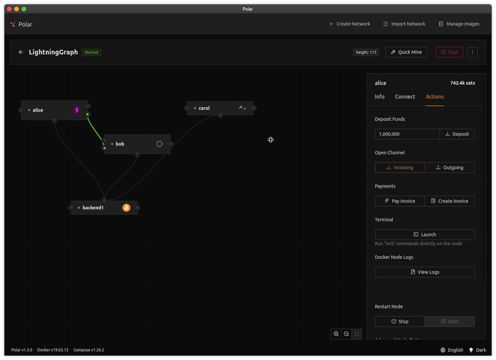
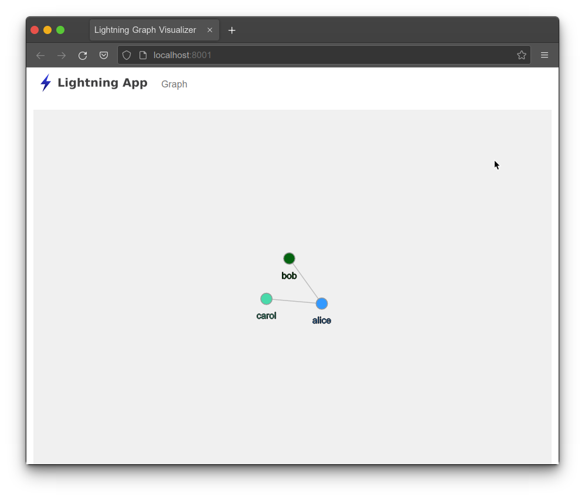
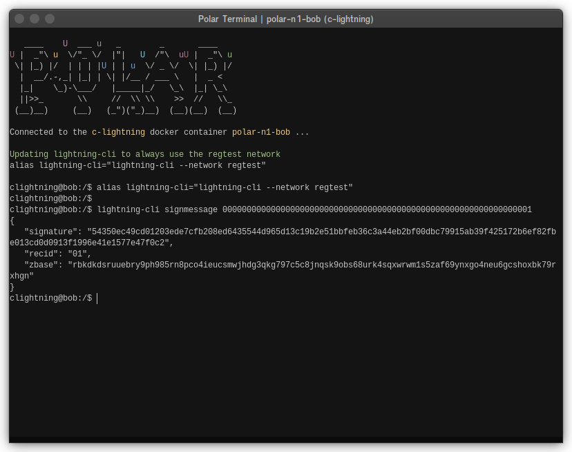
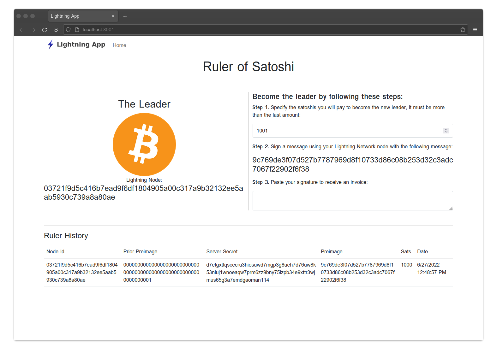
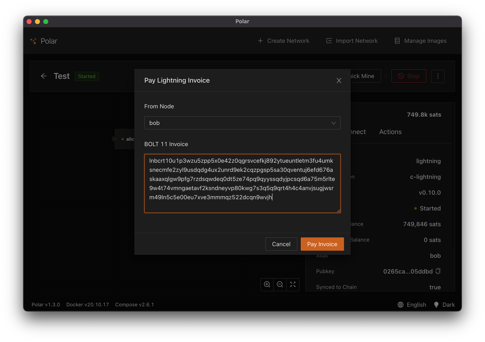
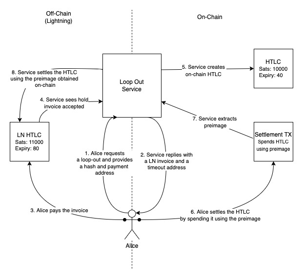

Building on Lightning
Welcome to the Building on Lightning tutorial!
This tutorial will help you become familiar with creating applications that interact with the Lightning Network.
This tutorial is for individuals with some familiarity of the Lightning Network and that have moderate software development experience. The applications are written with TypeScript and Node.js. These tools were used because API and backend systems for websites and mobile applications frequently use Node.js. The static typing of TypeScript help with code clarity and provide real time feedback while coding.
This tutorial will walk you through two applications.
The first application will get you comfortable building an application that connects to a Lightning Network node. It will render a visualization of the node's network graph. While the focus of these tutorials isn't UI development, this application will have some UI components to show you how information can be threaded through an application.
The second application will focus on invoices. It will construct a simple game of ownership using paid invoices. With this application you will become familiar with code to create, retrieve, and monitor invoices.
The last section of this tutorial will cover advanced Lightning Network topics. These scripts will highlight some of the experimental and lower level tooling you may need when building more complicated Lightning Network applications.
Happy Coding!
Visualizing the Lightning Network
Welcome to Building on Lightning! This series will acquaint you with tools and techniques you will need to build Lightning Network applications. The first application we will build is a visualizer of the nodes and channels from the perspective of one node in Lightning Network. You will learn how to connect a web application to a Lightning Network node and receive real-time updates from that node.
This project uses TypeScript in the Node.js runtime. If you're not familiar with TypeScript, you may want to do a tutorial to help you understand the code. Node.js is a popular runtime for web development. When combined with TypeScript it allows us to build large applications with compile-time type checking. This helps us reduce mistakes and properly structure our applications for future changes. This project also uses Express as the web framework. It is a fast, easy to use, and popular web framework. Lastly this project uses React and D3 for creating the visualization of the Lightning Network graph.
The Lightning Network as a Graph
We'll start with a brief discussion of why we can conceptualize the Lightning Network as a graph. The Lightning Network consists of many computers running software that understands the Lightning Network protocols as defined in the BOLT specifications. The goal is to allow trustless, bidirectional, off-chain payments between nodes. So why is a picture of the network important?
Let's first consider payments between just two nodes: Alice and Carol. If Alice wants to pay Carol, she needs to know how to connect to Carol (the IP and port on which Carol's Lightning Network software is accessible). We refer to directly establishing a communication channel as becoming a peer. Once Alice and Carol are peers, Alice can establish a payment channel with Carol and finally pay her.
This sounds good, but if this was all the Lightning Network was, it has a major shortcoming. Every payment requires two nodes to become peers and establish channels. This means there are delays in sending a first payment, on-chain cost to establish channels, and ongoing burden to manage the growing set of channels.
Instead, the Lightning Network allows us to trustlessly route payments through other nodes in the network. If Alice wants to pay Carol, Alice doesn't need to be directly connected to Carol. Alice can pay Bob and Bob can pay Carol. However, Alice must know that she can pay through Bob.
The prerequisite for routed payments is that you need an understanding of the paths that a payment can take.
Without this understanding we cannot construct a route to make our payment.
Conceptually we can think of the nodes and channels topology as a graph data structure. Each computer running Lightning Network software is a node in the graph. Each node is uniquely identified by a public key. The edges of the graph are the public channels that exist between nodes. The channels are uniquely identified by the UTXO of the channel's funding transaction.
One consideration is that there is no such thing as a complete picture of the Lightning Network. The Lightning Network allows for private channels between nodes. Only nodes participating in a private channel will see these edges in their view of the network. As a result, the Lightning Network is much larger than the topology created by public channels alone.
Another observation is that we often see visuals of the Lightning Network as an undirected graph. This makes sense when we are trying to get a picture of what channels exist. However there are complications when routing payments. Some balance of funds can exist on either side of the channel. This means that our ability to route through a channel is actually directional. For practical and privacy purposes, the balance on each side of the channel is opaque.
This is a lot to unpack, but if you're curious and want to dig deeper into how node's gossip about the topology and how they perform route path finding, refer to Chapters 11 and 12 in Mastering the Lightning Network by Antonopoulos et al.
For this visualization we'll be treating the graph as undirected. So without further ado, let's get started building!
Environment Setup
We'll start by setting up your environment. Since we're going to build a Lightning Network application it should not be surprising that our infrastructure consists of a Bitcoin node and one or more Lightning Network nodes that we can control.
As a user of Bitcoin and the Lightning Network you are most likely familiar with the main Bitcoin network. Bitcoin software actually has multiple networks that it can run on:
- mainnet - primary public network; the network a user interacts with.
- testnet - alternate network used for testing. It is typically smaller in size and has some other properties that make it useful for testing software built on top of Bitcoin. More info.
- regtest - regression testing network that gives us full control of block creation.
For creating and testing our Lightning Network applications we'll want our infrastructure to start with the regtest network to give us control and speed up our development process. At a future time we can transition to running in testnet or mainnet.
As you can imagine, getting all this running can be a chore. Fortunately, there is the tool Polar that allows us to spin up Lightning network testing environments easily!
Our first step is to download and install Polar for your operating system from the website.
For a Linux system, it will be as an AppImage. You will need to grant executable rights to the file, then you can run the application.
For Mac it will be a .dmg file that you will need to install.
For Windows, it will be an .exe file that you can run.
Once Polar is running, you can create a new network. Polar allows us to run many different networks with varying configurations. For this application we will start the network with 1 LND node, 1 c-lightning node, 1 Eclair, and 1 Bitcoin Core node. Provide a name for this network and create it!

Next, start the network. Polar will launch Docker containers for each of the nodes in your network. This may take a few minutes for the nodes to come online.
Polar also provides a few tools to allow us to easily perform common tasks.
We will start by depositing some funds into Alice's node. To do this, click on Alice's node, then click on the Actions tab.
We will then deposit 1,000,000 satoshis into Alice's node. When you click the Deposit button, the Bitcoin Core node running in regtest will create new blocks to an address and 0.01000000 bitcoin (1,000,000 satoshis) will deposited into an address controlled by Alice's Lightning Network node.

Now that Alice has some funds, she can create a channel with another node on the network. We can do this by opening an outgoing channel by clicking the Outgoing button in the Open Channel section of Alice's Actions tab.
Let's choose Bob as the channel counterparty and fund the channel with 250,000 satoshis.

We should now see a channel link between Alice and Bob in our channel graph.

At this point, we are ready to write some code!
Code Setup
Before we get started writing code, we have a few small things we need to take care of.
IDE Setup
For web applications, I like to use Visual Studio Code as my IDE. It has excellent tooling for TypeScript and web development. I install the ESLint and Prettier plugins to give me real time feedback of any problems that my application may have.
Runtime Setup
You will need to install Node.js 16 by following the instructions for your operating system.
Repository Setup
With general prerequisites setup, we can now clone the repository:
Clone the repository:
git clone https://github.com/bmancini55/building-lightning-graph.git
Navigate to the repository:
cd building-lightning-graph
The repository uses npm scripts to perform common tasks. To install the dependencies, run:
npm install
This will install all of the dependencies for the three sub-modules in the project: client, server, and style. You may get some warnings, but as long as the install command has exit code 0 for all three sub-projects you should be good. If you do encounter any errors, you can try browsing to the individual sub-project and running the npm install command inside each directory.
Repository Walk-Through
The repository is split into three parts, each of which has a package.json to install Node.js dependencies for that sub-application. Each also has unique set of npm scripts that can be run. The three parts are:
client- Our React application lives in this directory.server- Our Express server code lives in this directory.style- Our code to create CSS lives here.
We will discuss the client and server sections in more detail as we go through the various parts of the application.
Creating an API
Our first coding task is going to be creating a REST API of our own to provide graph information to our application. We'll start by getting our server connected to Alice's LND node.
Connecting to Alice's node
We've chosen to connect to LND for this application but we could just as easily use c-lightning or Eclair.
LND also a Builder's Guide that you may want to explore to learn more about commonly performed tasks.
LND has two ways we can interact with it from code: a REST API and a gRPC API. gRPC is a high performance RPC framework. With gRPC, the wire protocol is defined in a protocol definition file. This file is used by a code generators to construct a client in the programming language of your choice. gRPC is a fantastic mechanism for efficient network communication, but it comes with a bit of setup cost. The REST API requires less effort to get started but is less efficient over the wire. For applications with a large amount of interactivity, you would want to use gRPC connectivity. For this application we'll be using the REST API because it is highly relatable for web developers.
LND API Client
Inside our server sub-project is the start of code to connect to LND's REST API. We'll add to this for our application.
Why are we not leveraging an existing library from NPM? The first reason is that it is a nice exercise to help demonstrate how we can build connectivity. Lightning Network is still a nascent technology and developers need to be comfortable building tools to help them interact with Bitcoin and Lightning Network nodes. The second and arguably more important reason is that as developers in the Bitcoin ecosystem, we need to be extremely wary of outside packages that we pull into our projects, especially if they are cryptocurrency related. Outside dependencies pose a security risk that could compromise our application. As such, my general rule is that runtime dependencies should generally be built unless it is burdensome to do so and maintain.
With that said, point your IDE at the server/src/domain/lnd/LndRestTypes.ts file. This file contains a subset of TypeScript type definitions from the REST API documentation. We are only building a subset of the API that we'll need for understanding the graph.
Exercise : Defining the Graph Type
In LndRestTypes you'll see our first exercise. It requires us to define the resulting object obtained by calling LND's /v1/graph API. You will need to add two properties to the Graph interface. To help you, the LightningNode and ChannelEdge types are already defined. In TypeScript, you can define an array as such
// server/src/domain/lnd/LndRestTypes
export interface Graph {
// Exercise: define the `nodes` and `edges` properties in this interface.
// These arrays of LightningNode and ChannelEdge objects.
}
Exercise: Making the Call
Now that we've defined the results from a call to /v1/graph, we need to point our IDE at server/src/domain/lnd/LndRestClient.ts so we can write the code that makes this API call.
LndRestClient implements a basic LND REST client. We can add methods to it that are needed by our application. It also takes care of the heavy lifting for establishing a connection to LND. You'll notice that the constructor takes three parameters: host, macaroon, and cert. The macaroon is similar to a security token. The macaroon that you provide will dictate the security role you use when calling the API. The cert is a TLS certificate that enables a secure and authenticated connection to LND.
// server/src/domain/lnd/LndRestClient
export class LndRestClient {
constructor(
readonly host: string,
readonly macaroon: Buffer,
readonly cert: Buffer
) {}
}
This class also has a get method that is a helper for making HTTP GET requests to LND. This helper method applies the macaroon and ensures the connection is made using the TLS certificate.
Your next exercise is to implement the getGraph method in server/src/domain/lnd/LndRestClient.ts. Use the get helper method to call the /v1/graph API and return the results.
// server/src/domain/lnd/LndRestClient
public async getGraph(): Promise<Lnd.Graph> {
// Exercise: use the `get` method below to call `/v1/graph` API
// and return the results
}
After this is complete, we should have a functional API client. In order to test this we will need to provide the macaroon and certificate.
Exercise: Configuring .env to Connect to LND
In this application we use the dotenv package to simplify environment variables. We can populate a .env file with key value pairs and the application will treat these as environment variables.
Remember that environment variables can be read in Node.js from the process.env object. So if we have an environment variable PORT:
$ export PORT=8000
$ node app.js
This environment variable can be read with:
const port = process.env.PORT;
Our next exercise is adding some values to .env inside the server sub-project. We'll add three new environment variables:
LND_HOSTis the host where our LND node residesLND_READONLY_MACAROON_PATHis the file path to the readonly MacaroonLND_CERT_PATHis the certificate we use to securely connect with LND
Fortunately, Polar provides us with a nice interface with all of this information. Polar also conveniently puts files in our local file system to make our lives as developers a bit easier.
In Polar, to access Alice's node by click on Alice and then click on the Connect tab. You will be shown the information on how to connect to the GRPC and REST interfaces. Additionally you will be given paths to the network certificates and macaroon files that we will need in .env.

Go ahead and add the three environment variables defined above to .env.
# Express configuration
PORT=8001
# LND configuration
# Exercise: Provide values for Alice's node
LND_HOST=
LND_READONLY_MACAROON_PATH=
LND_CERT_PATH=
Exercise: Reading the Options
Now that our environment variables are in our configuration file, we need to get them into the application. The server project uses server/src/Options to read and store application options.
The class contains a factory method fromEnv that allows us to construct our options from environment variables. We're going to modify the Options class to read our newly defined environment variables.
This method is partially implemented, but your next exercise is to finish the method by reading the cert file into a Buffer.
// server/src/Options
public static async fromEnv(): Promise<Options> {
const port: number = Number(process.env.PORT),
const host: string = process.env.LND_HOST,
const macaroon: Buffer = await fs.readFile(process.env.LND_READONLY_MACAROON_PATH),
// Exercise: Using fs.readFile read the file in the LND_CERT_PATH
// environment variable
const cert: Buffer = undefined;
return new Options(port, host, macaroon, cert);
}
Note: In this example we use TypeScript's Parameter Properties feature. This feature creates class properties from readonly parameters. I like it because it saves a few keystrokes by removing the boilerplate of defining the property in the class, then assigning its value in the constructor. There are pros and cons to this approach, so feel free to construct your objects how think is best and in a way that is likely to reduce errors.
Exercise: Create the LND client
The last step before we can see if our application can connect to LND is that we need to create the LND client! We will do this in the entrypoint of our server code server/src/Server.
In this exercise, construct an instance of the LndRestClient type and supply it with the options found in the options variable.
// server/src/Server
async function run() {
// construct the options
const options = await Options.fromEnv();
// Exercise: using the Options defined above, construct an instance
// of the LndRestClient using the options.
const lnd: LndRestClient = undefined;
// construct an IGraphService for use by the application
const graphAdapter: IGraphService = new LndGraphService(lnd);
At this point, our server code is ready. We'll take a look at a few other things before we give it a test.
Looking at LndGraphService
The LndRestClient instance that we just created will be used by LndGraphService. This class follows the adapter design pattern: which is a way to make code that operates in one way, adapt to another use. The LndGraphService is the place where we make the LndRestClient do things that our application needs.
export class LndGraphService extends EventEmitter implements IGraphService {
constructor(readonly lnd: LndRestClient) {
super();
}
/**
* Loads a graph from LND and returns the type. If we were mapping
* the returned value into a generic Graph type, this would be the
* place to do it.
* @returns
*/
public async getGraph(): Promise<Lnd.Graph> {
return await this.lnd.getGraph();
}
For the purposes of fetching the graph, we simply call getGraph on the LndRestClient and return the results. But if we modified our application to use a generic graph instead of the one returned by LND, we could do that translation between the Lnd.Graph type and our application's graph here.
At this point your server should capable of connecting to LND!
Looking at the Graph API
Since we're building a REST web service to power our front end application, we need to define an endpoint in our Express application.
Take a look at server/src/Server. We're doing a lot of things in this file for simplicity sake. About half-way down you'll see a line:
// server/src/Server
app.use(graphApi(graphAdapter));
This code attaches a router to the Express application.
The router is defined in server/src/api/GraphApi. This file returns a function that accepts our IGraphService that we were just taking a look at. You can then see that we use the IGraphService inside an Express request handler and then return the graph as JSON.
// server/src/api/GraphApi
export function graphApi(graphService: IGraphService): express.Router {
// Construct a router object
const router = express();
// Adds a handler for returning the graph. By default express does not
// understand async code, but we can easily adapt Express by calling
// a promise based handler and if it fails catching the error and
// supplying it with `next` to allow Express to handle the error.
router.get("/api/graph", (req, res, next) => getGraph(req, res).catch(next));
/**
* Handler that obtains the graph and returns it via JSON
*/
async function getGraph(req: express.Request, res: express.Response) {
const graph = await graphService.getGraph();
res.json(graph);
}
return router;
}
Dev Note: Express does not natively understanding async code but we can easily retrofit it. To do this we define the handler with a lambda function that has arguments for the Request, Response, and next arguments (has the type (req, res, next) => void). Inside that lambda, we then call our async code and attach the catch(next) to that function call. This way if our async function has an error, it will get passed to Express' error handler!
We can now run npm run watch at the root of our application and our server should start up and connect to LND without issue.
If you're getting errors, check your work by making sure Polar is running, the environment variables are correct, and you've correctly wired the code together.
You can now access http://localhost:8001/api/graph in your browser and you'll see information about the network as understood by Alice!
User Interface
Now that we have a functioning server, let's jump into the user interface! This application uses the React.js framework and D3.js. If you're not familiar with React, I suggest finding a tutorial to get familiar with the concepts and basic mechanics. We'll again be using TypeScript for our React code to help us add compile-time type-checking.
Exploring the User Interface
The user interface sub-project lives inside the client folder of our repository. Inside client/src is our application code.
The entry point of the application is App.tsx. This code uses react-router to allow us to link URLs to various scenes of our application. Once we've built-up our entry point we embed the application into the DOM.
// client/src/App
import React from "react";
import ReactDom from "react-dom";
import { BrowserRouter } from "react-router-dom";
import { LayoutScene } from "./scenes/layout/LayoutScene";
ReactDom.render(
<BrowserRouter>
<LayoutScene />
</BrowserRouter>,
document.getElementById("app")
);
From this you will see that we render a single component, <LayoutScene>. It lives inside client/src/scenes/layout. Inside this folder is where we define things related to our application layout.
The LayoutScene component is also where we use react-router to define our various scenes based on the URL path.
// client/src/scenes/layout/LayoutScene
import React from "react";
import { Route, Routes } from "react-router-dom";
import { AppNav } from "./components/AppNav";
import { GraphScene } from "../graph/GraphScene";
export const LayoutScene = () => {
return (
<div className="layout">
<div className="container-fluid mb-3">
<AppNav />
</div>
<Routes>
<Route path="/" element={<GraphScene />} />
</Routes>
</div>
);
};
Here you can see that inside the <Routes> component we define a single <Route> that is bound to the root path /. This route renders the GraphScene component which renders our graph!
So our folder structure looks like this:
client\
src\
App.tsx
scenes\
layout\
LayoutScene.tsx
graph\
GraphScene.tsx
And our code component hierarchy looks like this:
App
LayoutScene
GraphScene
Each of the scenes can also have components that are specific to the the scene. These are stored inside the components folder inside each scene.
client\
src\
App.tsx
scenes\
layout\
LayoutScene.tsx
components\
NavBar.tsx
graph\
GraphScene.tsx
components\
Graph.tsx
Because we're already ran npm run watch at the root of the application, our client side code is already being built for us.
This command builds the React application and place it into the dist folder.
You can now use your browser to navigate to http://localhost:8001 and view the application!

Exercise: Loading the Graph
Our next task is wiring up the graph API we previously created to our user interface. To make our life easier we will use an ApiService to house the calls to our API.
In your IDE, navigate to /client/src/services/ApiService.ts and create a method that uses the get helper get to retrieve the graph.
// client/src/services/ApiService
import { Lnd } from "./ApiTypes";
export class ApiService {
constructor(readonly host: string = "http://127.0.0.1:8001") {}
protected async get<T>(path: string): Promise<T> {
const res = await fetch(path, { credentials: "include" });
return await res.json();
}
// Exercise: Create a public fetchGraph method that returns Promise<Lnd.Graph>.
// You can use the get helper method above by supplying it with the path /api/graph.
public async fetchGraph(): Promise<Lnd.Graph> {
return undefined;
}
}
This class is conveniently accessible by using the useApi hook located in the hooks folder. By adding our fetchGraph method to the ApiService, we can gain access to it with the useApi hook inside any component! Feel free to take a look at the useApi hook code and if you're confused read up on React hooks.
Exercise: Wire up the API Call
Next let's point our IDE at the GraphScene component in client/src/scenes/graph and see if we can wire up the API to a component.
For this exercise, inside the useEffect hook, call the api's fetchGraph method. Be mindful that this method returns a promise, which you will need to retrieve the results from. To test your code, simply log the results to the console.
// client/src/scenes/graph/GraphScene
import React, { useEffect, useRef } from "react";
import { useApi } from "../../hooks/UseApi";
import { Graph } from "./components/Graph";
export const GraphScene = () => {
const api = useApi();
const graphRef = useRef<Graph>();
useEffect(() => {
// Exercise: Using the api, call the fetchGraph method. Since this returns a promise,
// we need to use the `then` method to retrieve the results. With the results, call
// `graphRef.current.createGraph` and add a console.log statement so you see the graph.
}, []);
return (
<div className="container-fluid h-100">
<div className="row h-100">
<div className="col h-100">{<Graph ref={graphRef} />}</div>
</div>
</div>
);
};
Dev Note: The useEffect hook has two arguments: a callback function and an array of variables that when changed will trigger the callback function. Providing an empty array means our callback function will only be called when the component mounts, which is the functionality we are looking for.
Dev Note: Promises are a mechanism for working with asynchronous operations. When a promise completes, the results are available in the then method.
When you refresh your browser, the background will now be gray but you won't yet see the graph yet. If you open your developer tools, you will see the graph output that you wrote with console.log!

Graph Component Overview
The Graph component, client/src/scenes/graph/components/Graph, is a bit different from a normal React component because it is encapsulating D3. Typically React is in charge of rendering the DOM. For this component, React will only control the SVG element. D3 will take control of the SVG element and render elements into it.
React interfaces with D3 via two methods on the component: createGraph and updateGraph. Each method takes information from our domain and converts it into objects that D3 can control and render.
For those familiar with React this may be a bit weird since we are transitioning from the declarative style of programming used by React and using imperative code to call these functions. If that's a little confusing, take a gander at GraphScene and Graph. Notice that GraphScene renders Graph as a child, but we use the createGraph method to push information into D3.
Exercise: Creating the Graph
After loading the page, we don't yet see the graph because we haven't fully implemented the createGraph method in the Graph component. createGraph is responsible for converting our Lnd.Graph object into objects that can be used by D3.
As defined in server/src/domain/lnd/LndRestTypes, our Lnd.Graph object has two arrays: nodes and edges.
Each Lnd.LightningNode object has three properties that we will use:
pub_key- a string that is the unique identifier for the nodecolor- the color of the node that is specified by the node operatoralias- the friendly name of the node that is specified by the node operator
Each Lnd.ChannelEdge object has three properties that we will use:
channel_id- the unique identifier for the channelnode1_pub- the identifier for the first node, when sorted, of the channelnode2_pub- the identifier for the second node, when sorted, of the channel
Using this information we need to construct new objects that can be controlled by D3. We need to do this because D3 will store rendering state on the objects. We don't want D3 to mutate the original objects so we'll construct new ones that D3 can control.
This gets us to our next exercise. We need to modify the Graph component's createGraph method to convert our Lightning graph objects into D3 controlled objects. To do this we create two arrays:
- one array for the graph's nodes created from our
Lnd.LightningNode. We mappub_keytoid, mapcolortocolor, and mapaliastotitle.interface D3Node { id: string; color: string; title: string; } - one array for the graph's links created from our
Lnd.ChannelEdge. We mapchannel_idtoid,node1_pubtosourceandnode2_pubtotarget.interface D3Link { id: string; source: string; target: string; }
// client/src/scenes/graph/components/Graph
createGraph(graph: LightningGraph) {
// map the graph's nodes into d3 nodes
this.nodes = [];
// map the graph's channels into d3 links
this.links = [];
Once we have created these maps we can refresh our browser and we should see the current graph!

Real Time Server Updates
At this point we've successfully connected our user interface to a REST server! However what happens if a new channel is created or a new node creates a channel? Our Lightning Network nodes will have new graph information but we would need to manually refresh the page.
Go ahead and give it a try by creating a channel between Bob and Carol. When we refresh the browser we should see a new link between Bob and Carol.
This is ok, but we can do better by passing updates to our user interface using WebSockets.
Exploring WebSocket Code
The WebSocket code on our server uses the ws library and lives inside the SocketServer class. You don't have to make any changes to it, but you may want to take a look at it. This class maintains a set of connected sockets. It also includes a broadcast method that allows us to send data for some channel to all connected sockets. We'll use this broadcast method shortly to send graph updates to all connected WebSockets.
The code to start the SocketServer lives inside Server. At the end of the run method, we create the SocketServer instance and have it listen to the HTTP server for connections.
// server/src/Server
async function run() {
// OTHER CODE IS HERE...
// start the server on the port
const server = app.listen(Number(options.port), () => {
console.log(`server listening on ${options.port}`);
});
// start the socket server
const socketServer = new SocketServer();
// start listening for http connections
socketServer.listen(server);
All of this is ready to go, all we need to do is subscribe to updates from LND and do something with them.
Exercise: Subscribe to Updates
Back in our server code's LndGraphService is a method subscribeGraph that we need to implement. This method subscribes to graph updates from LND using it's subscribeGraph method. The requirement for this function is that it needs to emit these updates as events.
public async subscribeGraph(): Promise<void> {
// Exercise: subscribe to the Lnd graph updates using `this.lnd.subscribeGraph`
// and emit a "update" event each time the handler is called.
}
Dev Note: This class is an EventEmitter. EventEmitters can use the emit method to tell other classes that something has happened. These other classes are "observers" and can listen using the on method. Using EventEmitters allows us to keep code decoupled and avoid messy callback nesting.
Exploring WebSocket Broadcasting
The next logical step is consuming the update event that we just created and sending the update to the client over a WebSocket. If you navigate back to the trusty Server you will find some interesting code at the bottom of the run function.
// server/src/Server
async function run() {
// other code is here...
// construct the socket server
const socketServer = new SocketServer();
// start listening for http connections using the http server
socketServer.listen(server);
// attach an event handler for graph updates and broadcast them
// to WebSocket using the socketServer.
graphAdapter.on("update", (update: Lnd.GraphUpdate) => {
socketServer.broadcast("graph", update);
});
// subscribe to graph updates
graphAdapter.subscribeGraph();
}
We subscribe to the update event on graphAdapter that we just implemented. In the event handler we then broadcast the update to all of the WebSockets.
After the event handler is defined, all of the plumbing is in place to for updates to go from LND -> LndRestClient -> LndGraphAdapter -> WebSocket.
You should now be able to connect a WebSocket to the server and receive updates by generating channel opens or closes in Polar.
Real Time User Interface
Now that our WebSocket server is sending updates, we need to wire these updates into our user interface.
Exploring Socket Connectivity
The application already has some code to help us. We use React's context to establish a long-lived WebSocket that can be used by any component in the component hierarchy. This code lives in client/src/context/SocketContext.
To integrate this context into our components we can use a custom hook: useSocket that lives in client/src/hooks/UseSocket. This hook allows us to retrieve the websocket and subscribe to events for a any channel.
export const SomeComponent = () => {
const socket = useSocket("some_channel", (data) => {
// do something with data
console.log(data);
});
};
The last thing we should know is that in order for this to work, we need to establish the React Context higher in the component hierarchy. A great place is at the root!. We add the context via the SocketProvider component in our application's root component: App.
// client/src/App
import React from "react";
import ReactDom from "react-dom";
import { BrowserRouter } from "react-router-dom";
import { SocketProvider } from "./context/SocketContext";
import { LayoutScene } from "./scenes/layout/LayoutScene";
ReactDom.render(
<SocketProvider>
<BrowserRouter>
<LayoutScene />
</BrowserRouter>
</SocketProvider>,
document.getElementById("app")
);
With the lay of the land defined, we can now embark on our journey to finish the real time updates.
Exercise: Subscribe to Updates
The logical place to subscribe to updates is in the GraphScene component. As previously established, this scene is responsible for wiring up data connections for graph related components.
Pointing our IDE at the GraphScene component our next exercise is implementing the socket handler. Using the useSocket hook, subscribe to graph channel. The handler function should call the graphRef.current.updateGraph method on the graph component.
// client/src/scenes/graph/GraphScene
import React, { useEffect, useRef } from "react";
import { useSocket } from "../../hooks/UseSocket";
import { useApi } from "../../hooks/UseApi";
import { Graph } from "./components/Graph";
export const GraphScene = () => {
const api = useApi();
const graphRef = useRef<Graph>();
useEffect(() => {
api.fetchGraph().then((graph) => {
console.log("received graph", graph);
graphRef.current.createGraph(graph);
});
}, []);
useSocket("graph", (update: Lnd.GraphUpdate) => {
// Exercise: Call `graphRef.current.updateGraph` with the update
});
return (
<div className="container-fluid h-100">
<div className="row h-100">
<div className="col h-100">{<Graph ref={graphRef} />}</div>
</div>
</div>
);
};
Exercise: Update the Graph
We are almost done! The final step is completing the updateGraph method. This method converts our Lnd.GraphUpdate object into D3Node and D3Link objects.
The Lnd.GraphUpdate object we receive from the server is defined in server/src/domain/lnd/LndRestTypes. It consists of four pieces of data that we care about:
- new nodes that are don't yet have in the graph
- existing nodes that need to have their title and alias updated
- new channels that we need to add to the graph
- closed channels that we need to remove from the graph
The updateGraph method is partially implemented for the first three conditions. Your last task is to remove a channel from the links if it has been closed.
// client/src/scenes/graph/components/Graph
updateGraph(update: Lnd.GraphUpdate) {
// Updates existing nodes or adds new ones if they don't already
// exist in the graph
for (const nodeUpdate of update.result.node_updates) {
const node = this.nodes.find(p => p.id === nodeUpdate.identity_key);
if (node) {
node.title = nodeUpdate.alias;
node.color = nodeUpdate.color;
} else {
this.nodes.push({
id: nodeUpdate.identity_key,
color: nodeUpdate.color,
title: nodeUpdate.alias,
});
}
}
// Adds new channels to the graph. Note that for the purposes of
// our visualization we only care that a link exists. We will end
// up receiving two updates, one from each node and we just add
// the first one.
for (const channelUpdate of update.result.channel_updates) {
const channel = this.links.find(p => p.id === channelUpdate.chan_id);
if (!channel) {
this.links.push({
source: channelUpdate.advertising_node,
target: channelUpdate.connecting_node,
id: channelUpdate.chan_id,
});
}
}
// Exercise: Remove closed channels from `this.links`.
this.draw();
}
After completing this exercise we will have everything needed for our graph to be functional. Try adding or removing a channel, you should see our graph application automatically update with the changes! Keep in mind that it may take a moment for changes to propagate throughout your network.
Further Exploration
This is just the beginning of interesting things we can do to help us visualize the Lightning Network. Hopefully this tutorial provided you with an overview of how we can interface with a Lightning Network node to retrieve information and receive real time updates.
A few ideas for how you can continue your exploration:
- How would you add other information to our user interface? What part of the application needs to be changed?
- How would you connect to c-lightning or Eclair? What would need to change about the architecture?
- How would you connect to testnet or mainnet? How would you address scaling given that the main network has 10's of thousands of nodes and channels?
- How would you make our application production ready? How would you add testing? What happens if LND restarts? What happens if the REST/WebSocket server restarts?
Lightning Network Invoices
Receiving payments through invoices is one of the most common activities for Lightning applications. You're most likely already familiar with receiving payments via Bitcoin through an address. The Lightning Network handles payments in a different manner. The primary mechanism for receiving payments is through an invoice, also known as a payment request. In the most common use case a payment request is generated by the recipient and is provided out-of-band to the payment sender. The request is a one-time use thing that expires after some duration.
For example, Alice runs a web store and Bob wants to buy a t-shirt. He adds the shirt to his cart and goes to check out. At this point, Alice creates an invoice for Bob's purchase. This invoice includes the cost of the shirt, a timeout that Bob needs to complete the transaction within, the hash of a secret value generated by Alice, and Alice's signature denoting that she indeed created the payment request.
Based on the information encoded in the invoice, invoices are typically one-time use and are intended for a specific purpose and amount. Functionally, this means that an invoices tells the sender: who, how much, and within what time frame to send a payment. The invoice is also digitally signed by the recipient. The signature ensures that an invoice can't be forged (Carol can't create an invoice for Alice). The last and possibly most important piece is that the invoice includes the hash of secret information. This hash obscures the secret information that will only get revealed once a payment is made.
So when Bob pays the invoice and Alice receives the payment, she reveals the secret. Revealing this secret acts as a proof of payment. Alice would only ever reveal the secret if Bob has made payment. Bob can only possess the secret if Alice gives it to him. Bob also has a signed invoice from Alice stating the conditions of the transaction. So once Bob pays Alice and she reveals the secret, Bob has a signed message from Alice and the secret that he can use as proof of payment.
So why all this complexity?
It enables one of the primary purposes of the of the Lightning Network which is trustless payment flow. This scheme allows payments to flow through the network even if Bob and Alice aren't directly connected. If you're unsure on how this works or want a refresher, I recommend reading this article on HTLCs payments.
For a more thorough walk through of invoices, check out Chapter 15 of Mastering the Lightning Network by Antonopoulos et al.
Environment Setup
Before we get started with invoices we first need to get our environment setup again. This application uses the same template we used in the Graph exercise, so you should already be familiar with the structure. For this application we'll only be focusing on building logic inside the server sub-project.
The application code is available in the Building on Lightning Invoices Project on GitHub. To get started, you can clone this repository:
git clone https://github.com/bmancini55/building-lightning-invoices.git
Navigate to the repository:
cd building-lightning-invoices
The repository uses npm scripts to perform common tasks. To install the dependencies, run:
npm install
This will install all of the dependencies for the three sub-modules in the project: client, server, and style. You may get some warnings, but as long as the install command has exit code 0 for all three sub-projects you should be good. If you do encounter any errors, you can try browsing to the individual sub-project and running the npm install command inside each directory.
We'll also need a Lightning Network environment to test. You can use the existing environment you created with Polar in the first project.
We'll again be building the application from the perspective of Alice using an LND node.
Exercise: Configuring .env to Connect to LND
We'll again use the dotenv package to simplify environment variables.
You'll need to add some values to the .env inside the server sub-project. Specifically we'll set values for the following:
LND_RPC_HOSTis the host for LND RPCLND_ADMIN_MACAROON_PATHis the file path to the admin MacaroonLND_INVOICE_MACAROON_PATHis the file path to the invoice MacaroonLND_READONLY_MACAROON_PATHis the file path to the "readonly" MacaroonLND_CERT_PATHis the certificate we use to securely connect with LND
Optionally, you can also set the LND_REST_HOST value.
It's not necessary for this tutorial, but if you want to experiment with the REST API via the building-lightning-invoices repo, you will need it.
To populate these values navigate to Polar. To access Alice's node by clicking on Alice and then click on the Connect tab. You will be shown the information on how to connect to the GRPC and REST interfaces. Additionally you will be given paths to the network certificates and macaroon files that we will need in .env.

Go ahead and add the environment variables defined above to .env.
# Express configuration
PORT=8001
# LND configuration
# Exercise: Provide values for Alice's node
LND_REST_HOST=
LND_RPC_HOST=
LND_CERT_PATH=
LND_ADMIN_MACAROON_PATH=
LND_INVOICE_MACAROON_PATH=
LND_READONLY_MACAROON_PATH=
Creating an Invoice in Code
We'll start the invoice coding journey by doing a very simple script to create the invoice. When run, our script will simply call the AddInvoice GRPC API in LND to construct and return the invoice.
The script code is located in server/scripts/CreateInvoiceScript.ts if you want to see the full thing. The interesting bits are below:
async function run() {
// construct the options
const options = await Options.fromEnv();
// create the rpc client
const lndRpcClient = new LndRpcClient(
options.lndRpcHost,
options.lndAdminMacaroon,
options.lndCert
);
// create the invoice
return lndRpcClient.addInvoice({
memo: "Demo invoice",
amt: 1000,
});
}
You can see this script has three parts
- Load the environment variables from the .env file we populated with Alice's node information
- Construct a client to securely communicate with the LND node
- Call the
AddInvoiceAPI with some info
When the script is run it will output result from calling AddInvoice which includes the encoded payment request.
Exercise: Run the Create Script
To run the script, from the root of repository, run the command:
npm run script:create-invoice
Dev note: We're using an NPM script to help simplify running the script. When an NPM script runs it will first output the underlying command that it is trying to execute.
If you are successful you should see some output similar to:
$ npm run script:create-invoice
> building-lightning-invoices@1.0.0 script:create-invoice
> cd server; ts-node scripts/CreateInvoiceScript.ts
{
r_hash: <Buffer 8f 9b 82 eb be 48 63 46 e5 6a 06 a0 e0 cd 18 e3 70 49 76 3d a3 23 d2 79 e8 3f d9 7d 7e 26 d3 44>,
payment_request: 'lnbcrt10u1p309sufpp537dc96a7fp35det2q6swpngcudcyja3a5v3ay70g8lvh6l3x6dzqdq5g3jk6meqd9h8vmmfvdjscqzpgsp59fj97cj6wcdlht8twr9ay3mhcm39nnfv8tp632lram4sxaylfwtq9qyyssqqll2xf39v9nwfy4pwlx8vl4wu6rxym56z80rylssu85h587kgssnleva78jwnz4lv0p9dhcka7pxgyh6hj462gzh897exa4ry4w4gfgqnzwpu8',
add_index: '22',
payment_addr: <Buffer 2a 64 5f 62 5a 76 1b fb ac eb 70 cb d2 47 77 c6 e2 59 cd 2c 3a c3 a8 ab e3 ee eb 03 74 9f 4b 96>
}
You can now copy the payment_request value and try to pay with Bob in Polar.

As you can see, creating an invoice is pretty straight forward. This example relies on the node to create the preimage and the hash for the invoice. Try modifying the script to change the memo, amount, or creating a preimage.
Next we'll build a more complicated application using invoices.
Application Walk-Through
To keep things simple, the application we're going to create relies solely on our Lightning Network node. Instead of using a database system like PostgreSQL, we'll use the invoice database that is part of our node to keep track of the application state.
For our application we're going to use the Lightning Network and invoices to create a virtual game of king of the hill. To play the game, someone becomes the leader by paying an invoice. Someone else can become the leader by paying a new invoice for more than the last leader. The neat thing is that any leader along the way can cryptographically prove they were the leader. In a sense, this application will act as a simple provenance chain for a "digital right" using Lightning Network invoices.
Let's see what our game looks like. Alice is running our application and is using LND as the backend. Bob is also running a network node and accesses Alice's website. Bob wants to become the first leader in the game.

The application is prompting Bob that he will need to pay 1000 satoshis. But to do this he must sign a message using his Lightning Network node. In this case, Bob needs to digitally sign the message 0000000000000000000000000000000000000000000000000000000000000001.

Note: In Polar we can open a terminal by right-clicking on the node and selecting "Launch Terminal". With c-lightning, you can use the command signmessage to sign a message. It will return a signature in both hex and zbase32 formats. To simplify our application we'll use the zbase32 format since LND only interprets signatures in this format.
Now that Bob has a signature for the message, he provides the signature to the application's user interface. The server creates an invoice using Alice's Lightning Network node. This invoice is specific to Bob since he provided the signature. Alice's server returns the invoice to Bob via the user interface.

At this point, Bob can pay the invoice.

Once Bob has paid the invoice he is now the new leader of the game!

If Carol wants to become the new leader, she can sign the message 9c769de3f07d527b7787969d8f10733d86c08b253d32c3adc7067f22902f6f38 using her Lightning Network node.

Note: In Polar, we once again can use the "Launch Terminal" option. With LND, you can also use the CLI command signmessage. This will only return a zbase32 format signature, which is the format our application requires.
Carol provides this signature via the user interface and the Alice's server generates an invoice specifically for Carol to become the leader of the game at point 9c769de3f07d527b7787969d8f10733d86c08b253d32c3adc7067f22902f6f38.

When Carol pays the invoice she will become the new leader!

Now that you have an understanding of how our application functions, we'll go through the algorithm for how it works.
Application Algorithm
You've now seen an example of our application with Bob and Carol becoming the leaders. This section will dig into the details of how the application works.
In order to create the ownership chain we're going to use a combination of hashes and digital signatures. We'll do a quick overview of both of those cryptographic primitives.
Cryptographic Hash Functions
Hash functions are functions that map data of arbitrary size to a fixed size. A cryptographic hash function is a hash function that is a one-way function who result is indistinguishable from random. A one-way function is a function where it is easy to compute in one direction but it is extremely difficult to compute the inverse function. For example, given a function f(x) => y, y is easy to generate given the function f and input x. However it is extremely difficult (and for good CHFs intractable) to calculate x given only y and f.
In terminology, the input to a hash function is known as a preimage. When the preimage is run through the hash function it produces a digest.
Bitcoin and Lightning Network frequently use the SHA-256 hash function. This function results in a 32-byte (256-bit) output. For example, if we use the SHA-256 hash algorithm we can see the 32-byte hex encoded digest.
sha256("a") = ca978112ca1bbdcafac231b39a23dc4da786eff8147c4e72b9807785afee48bb
sha256("b") = 3e23e8160039594a33894f6564e1b1348bbd7a0088d42c4acb73eeaed59c009d
As we discussed, there is no way to to derive the preimage a given the digest ca978112ca1bbdcafac231b39a23dc4da786eff8147c4e72b9807785afee48bb or to derive the preimage b given the digest 3e23e8160039594a33894f6564e1b1348bbd7a0088d42c4acb73eeaed59c009d.
If we combine the preimages to make ab we get a new digest that is in no way related to the digests of the individual preimage components.
sha256("ab") = fb8e20fc2e4c3f248c60c39bd652f3c1347298bb977b8b4d5903b85055620603
Cryptographic hash functions enable us to do interesting things like hide information in the digest that can be verified with knowledge of the preimage. We see this in action with invoices and HTLC payments. We'll leverage this information hiding/revealing to selectively build the preimage for our hash.
Elliptic Curve Digital Signature Algorithm (ECDSA)
This application will also make use of digital signatures created using the elliptic curve digital signature algorithm over the curve secp256k1. This is the curve that Bitcoin and Lightning Network use for digital signatures. We're not going to get into the specifics of how digital signatures work but if you want to deep dive, I recommend reading Chapters 1-3 of Programming Bitcoin by Jimmy Song.
The quick hits are that a private key can be used to generate a public key. This public key can be public knowledge. Only the holder of the private key is capable of generating the public key.
A signature is created for some piece of data, we'll refer to it as z using the private key. The signature can be shared publicly.
When a signature is combined with a public key it can be used to verify that the signature was indeed created by owner of that public key.
Given just the signature (and a bit of extra metadata), it is also possible to derive the public key that was used to create the signature. When a Lightning Network node verifies a signature it will derive the public key from the signature and verify it against the network graph database that contains all of the public keys for the network. We'll be using signature creation and validation in our application.
Our Algorithm
In our application we'll be using both digital signature and hashes to construct a chain of ownership. The basis of this chain is that the preimage from the last-settled invoice is used as an identifier of the next link. In a sense this creates a hash-chain of ownership.

This diagram shows you that the first link starts with some arbitrary id, in this case id=0. We start with an arbitrary identifier because there was no prior state. In each link, many invoices can be generated using this identifier. Each invoice will have a unique preimage that ties it to the user that wants to pay the invoice. When an invoice is finally paid (say with preimage=X for instance) a new link is generated and the identifier of the new link becomes the preimage of the settled invoice (so id=X for this example). So as you can see, when an invoice is paid, its preimage becomes identifier of our application.
Unlike in simple invoice payments (that we saw earlier), the preimage is not going to be arbitrarily generated by our Lightning Network node. We need to tie each invoices to a specific users for the current state of the game. We need to ensure that:
- Each invoice in a link has a unique preimage and hash, eg if Alice and Bob both want to become the leader they should get different invoices.
- It is not possible to guess the preimage for an invoice
- A leader can reconstruct the preimage using information that only they can generate once a payment has been made. This provides proof of ownership beyond possession of the preimage.
So let's explore the actual construction.
Alice is running the server for our application. She initiates the service with some seed value. Alice signs a message with the seed and keeps her signature to herself for now. Alice can always easily regenerate this signature if she needs to by resigning the seed.
Bob accesses Alice's website, and discovers that he can become the leader by
- Creating a signature using his Lightning Network node where the message is the
seed - Sending this signature to Alice's application
Alice's application verifies Bob's signature, making sure it is a valid signature for the seed and she sees that it's from Bob. As we talked about, only Bob will be able to generate this signature, but anyone can verify that the signature is valid and from Bob.
Alice now creates an invoice preimage by concatenating her signature for the seed, Bob's signature for the seed, and the satoshis that Bob is willing to pay.
preimage = alice_sig(seed) || bob_sig(seed) || satoshis
The only issue is that the Lightning Network invoices require the preimage to be 32-bytes. We get around this by simply using hashing to contain the value within 32-bytes:
preimage = sha256(alice_sig(seed) || bob_sig(seed) || satoshis)
Then our hash digest in the invoice is the hash of the preimage:
hash = sha256(preimage)
hash = sha256(sha256(alice_sig(seed) || bob_sig(seed) || satoshis))
Alice sends Bob the invoice. Bob wants to take ownership, so he pays the invoice and receives the preimage as proof of payment.
At this point, Bob can prove that he paid the invoice since he has the preimage, but he can't reconstruct the preimage. Alice needs to publish her signature to the website for Bob to be able reconstruct the preimage. Ideally we would have a scheme where Bob can prove ownership without needing out-of-band information, something encoded directly in the preimage itself. A fun thought experiment for later.
So how does Carol take over ownership? In order to do this, Alice application now advertises Bob's preimage as the current state. Carol can sign Bob's preimage and perform the same upload/pay invoice that Bob did. Once she completes the payment, the preimage for Carol's paid invoice becomes the new leading state of the game.
Now that may be a lot to unpack, so you may want to go through it a few time. And don't worry, after a few goes at making Bob and Carol the leaders it will hopefully become more intuitive.
Creating the Invoice Class
The next logical step is configuring how we'll handle invoices. For this application, we'll use LND and its invoice database to power our application. We'll be encoding some basic information into the invoice memo field so our application doesn't need to maintain or synchronize a separate database. In a production system we'd likely use a separate database system, but we've made this decision to keep the application tightly focused.
This time around we'll be using the LND RPC API. This is similar to the REST interface we used in the previous application but uses a binary protocol instead of HTTPS to communicate with the LND node. For the purposes of our application it will be remarkably similar and in reality, the only difference will be how we wire up the application. Which brings us to our next point.
From a software engineering perspective, it's a good practice to isolate our application logic from the specifics of the underlying data persistence mechanism. This rule is often conveyed when working with relational databases systems where it would be poor form for your database tables to dictate how your application logic functions. This is no different than working with Lightning Network nodes! We break out our code so that we can tightly focus the critical application bits from the logic of how we retrieve that information. A by-product is that we could switch from LND to c-lightning or Eclair without having to change our core application logic!
To achieve this decoupling, instead of pinning our application to the structure of invoices in LND's database, we'll create our own Invoice type that is used throughout our application. This also allows us to add some methods to our Invoice type that are domain specific to our application.
You can take a look at the server/domain/Invoice class. This class only has properties that the application uses: memo, preimage, hash, value in satoshis, and settlement information.
export class Invoice {
constructor(
public memo: string,
public preimage: string,
public hash: string,
public valueSat: string,
public settled: boolean = false,
public settleDate?: number
) {}
// Methods not shown...
}
Exercise: Implement createMemo
Our application is going be encoding some information into the memo field. We need to be careful about making the memo field too large but for our applications sake we'll construct the memo as such:
buy_{linkId}_{buyerId}
The linkId is going to be a 32-byte value (64 hex encoded characters). As we discussed in the last section, the linkId is the current point of the game. We use the linkId to help us identify which point of the game the invoice was for.
The buyerId is the 33-byte public key (66 hex encoded characters) of the node that we are generating the invoice for. In this case, if Bob requested an invoice to pay, this value would be the public key of Bob's Lightning Network node.
Go ahead and implement the createMemo method in server/domain/Invoice class according to the rule specified.
public static createMemo(linkId: string, buyer: string) {
// Exercise
}
When you are finished you can verify you successfully implemented the method with the following command:
npm run test:server -- --grep createMemo
Helper Function isAppInvoice.
Now that you create invoices memos we'll need to do the inverse. We need a way to distinguish invoices that the application created from other invoices that the Lightning Network node may have created for other purpose.
We do this with the isAppInvoice method. This method checks whether the memo conforms to the pattern we just created in the createMemo method. This function will only return true when a few conditions have been met:
- The invoice's memo field starts with the prefix
buy_ - The invoice's memo then contains 64 hex characters followed by another underscore
- The invoice's memo ends with 66 hex characters.
public isAppInvoice(): boolean {
return /^buy_[0-9a-f]{64}_[0-9a-f]{66}$/.test(this.memo);
}
Helper Functions linkId and buyerNodeId
We have two more helper methods that will be useful for our application. We want a quick way to extract the link identifier and the buyer's public key from the memo. We'll do this by implementing two helper methods that grab these values from the memo field. These two methods are very similar.
public get linkId(): string {
return this.memo.split("_")[1];
}
public get buyerNodeId(): string {
return this.memo.split("_")[2];
}
Exercise: Implement createPreimage
The last method we'll need on the Invoice class is a helper method that allows us to construct the preimage for an invoice. If you recall that we're going to generate the preimage using three pieces of data:
- The server's signature of the current link identifier
- A signature of the current link identifier created by the person trying to become the leader
- The satoshis that they will pay to become the leader.
We concatenate these values and use sha256 to contain the concatenation inside 32-bytes. Our algorithm looks like:
sha256(alice_sig(seed) || bob_sig(seed) || satoshis)
where || denotes concatenation.
Based on that information, go ahead and implement the createPreimage method in the server/domain/Invoice class. Note that a sha256 function is available for you to use.
public static createPreimage(local: string, remote: string, sats: number) {
// Exercise
}
When you are finished you can verify you successfully implemented the method with the following command:
npm run test:server -- --grep createPreimage
Loading Invoices
Now that we've discussed some aspects of domain specific invoices, we need to connect to our Lightning Network node and load invoices from its database. Our application does this using the data mapper design pattern to isolate the specifics about data access from the remainder of our application logic.
We define our data access behavior in the IInvoiceDataMapper interface that contains two methods for adding an invoice and performing a synchronization with the database.
export interface IInvoiceDataMapper {
/**
* Adds an invoice to the Lightning Network node
*/
add(value: number, memo: string, preimage: Buffer): Promise<string>;
/**
* Synchronizes the application with the current state of invoices. The
* handler method will be called for each invoice found in the invoice
* database and will be called when a new invoice is created, settled,
* or changes.
*/
sync(handler: InvoiceHandler): Promise<void>;
}
/**
* Defines a callback function that can be used to process a found invoice.
*/
export type InvoiceHandler = (invoice: Invoice) => Promise<void>;
With the IInvoiceDataMapper defined, we need to implement a concrete version of it that works with LND. The LndInvoiceDataMapper class does just that. It is located in the server/data/lnd folder. The constructor of this class accepts the interface ILndClient. There are two classes that implement ILndClient: LndRestClient and LndRpcClient that connect to LND over REST and GRPC respectively. We'll be using the latter to connect to LND over the GRPC API. With this code structure, our application could switch to other types of Lightning Network nodes by implementing a new IInvoiceDataMapper. Or if we wanted to switch between the LNDs REST or GRPC client we can supply a different ILndClient to the LndInvoiceDataMapper.
We'll now explore the methods on the LndInvoiceDataMapper. For loading invoices we're concerned with the sync method.
The sync method reaches out to our invoice database and requests all invoices. It will also subscribe to creation of new invoices or the settlement of existing invoices. Because the syncing process and the subscription are long lived, we will use notifications to alert our application code about invoice events instead of returning a list of the Invoice type. You may have noticed the InvoiceHandler type. This type defines any function that receives an Invoice as an argument. Our sync method takes a single argument which must be an InvoiceHandler. This handler function will be called every time an invoice of is found or changes.
The sync method does two things:
- connects to LND and retrieves all invoices in the database
- subscribes to existing invoices for changes
public async sync(handler: InvoiceHandler): Promise<void> {
// fetch all invoices
const num_max_invoices = Number.MAX_SAFE_INTEGER.toString();
const index_offset = "0";
const results: Lnd.ListInvoiceResponse = await this.client.listInvoices({
index_offset,
num_max_invoices,
});
// process all retrieved invoices by calling the handler
for (const invoice of results.invoices) {
await handler(this.convertInvoice(invoice));
}
// subscribe to all new invoices/settlements
void this.client.subscribeInvoices(invoice => {
void handler(this.convertInvoice(invoice));
}, {});
}
Looking at this code, you'll see that the method receives a handler: InvoiceHandler parameter and we call that handler for each invoice that our database returns and when there is a change as a result of the subscription.
But, before we call the handler we need to convert the invoice from LND's invoice to our application's Invoice type.
Exercise: Implement convertInvoice
This function is a mapping function that converts LND's invoice type into our application domain's Invoice class.
Go ahead and implement the convertInvoice method in the server/data/LndInvoiceDataMapper class. Make sure to perform proper type conversions.
public convertInvoice(invoice: Lnd.Invoice): Invoice {
// Exercise
}
When you are finished you can verify you successfully implemented the method with the following command:
npm run test:server -- --grep convertInvoice
At this point our application has all the necessary pieces to retrieve and process invoices.
Creating the Link Class
For our application, we can think of the leaders in the game as links in a chain. There is always a link at the end that is "open" for taking over the leadership position. The last closed link in the chain is the current leader of the game.
The Link class defines a single link in the chain of ownership. A Link can be in one of two states: unsettled or settled.
When a Link is unsettled, it means that no one has take ownership or closed that link. It is still open to the world and anyone can pay an invoice and take ownership. Only the last link in the chain will ever be unsettled.
When a Link is settled, it means there was an invoice that was paid to close that link. The person that paid the invoice becomes the owner of that link. The last closed link in the chain is considered the current leader of the game.
Take a look at the diagram of game links again.
The preimage of a settled invoice of the prior link becomes the identifier of the next link.
Let's take a look at the Link type.
export class Link {
public invoice: Invoice;
constructor(
public linkId: string,
public localSignature: string,
public minSats: number
) {}
// Methods
}
This type has a few properties:
linkIdis the identifier of the link and will either be a seed value for the first link or the preimage of the the settling invoice of the previous link.localSignatureis our Lightning Network node's signature of thelinkId. We'll use this to construct invoices using ourcreatePreimagehelper functionminSatsis the minimum satoshis payment we're willing to accept payment to settle thisLink. This value will be larger than the last link.
You'll also notice that there is an invoice property. This property will be assigned when a invoice when someone pays the Invoice that corresponds to this link.
Exercise: Implement isSettled
A Link is only considered settled when it has an invoice assigned and that invoice is settled.
Go ahead and implement the isSettled getter which should check the invoice property to see if it has a value. If it does have a value it should check the invoice to see if it has been settled.
public get isSettled(): boolean {
// Exercise
}
When you are finished you can verify you successfully implemented the method with the following command:
npm run test:server -- --grep isSettled
Exercise: Implement nextLinkId
Once a Link is settled, the nextLinkId property should contain the settling invoice's preimage.
This property should only return a value when a Link is settled. When the Link is settled it should return the invoice's preimage.
Go ahead and implement the nextLinkId getter.
public get nextLinkId(): string {
// Exercise
}
When you are finished you can verify you successfully implemented the method with the following command:
npm run test:server -- --grep nextLinkId
Creating the LinkFactory Class
To help us construct links we'll use the LinkFactory class. This class is responsible for creating Link objects based on two common scenarios:
createFromSeed- creates the first link in the chain using a seed since we won't have a prior link.createFromSettled- creates a new "tip of the chain" link when someone closes / settles a Link using the last settled link.
This class takes care of the heavy lifting for creating a Link so that we can easily test our code, and the consumers of this code aren't burdened by the implementation details of creating a Link.
As we previously talked about, we'll be using digital signatures. This class has a dependency on the IMessageSigner interface. This interface provides two methods:
- one for signing a message using your Lightning Network node
- one for verifying a received signature
export interface IMessageSigner {
/**
* Signs a message using the Lightning Network node
*/
sign(msg: string): Promise<string>;
/**
* Verifies a message using the Lightning Network node
*/
verify(msg: Buffer, signature: string): Promise<VerifySignatureResult>;
}
Under the covers, we have already implemented a LndMessageSigner class that uses LND to perform signature creation and verification. This will be wired up later but feel free to explore this code in the server/data/lnd folder.
Exercise: Implement createFromSeed
As we previously discussed, a Link starts out in the unsettled state, which means that no one has taken ownership of it. Logically, the application starts off without any ownership and in an unsettled state. Since we don't have any prior links, we'll simply create a link from some seed value.
In order to create a link we do two things:
- Sign the seed value using our Lightning Network node using the
IMessageSignerinstance - Construct a new
Linkand supply the seed as thelinkId, the signature our application server made for the seed, and the starting satoshis value required for the first owner.
Go ahead and implement the createFromSeed method.
public async createFromSeed(seed: string, startSats: number): Promise<Link> {
// Exercise
}
When you are finished you can verify you successfully implemented the method with the following command:
npm run test:server -- --grep createFromSeed
Exercise: Implement createFromSettled
Now that we know how to create a link to start the application. A person could become the leader by paying the invoice. Once that invoice is paid, the first link will become settled. We need a method to create a new link so that the next person can try to become the leader.
We will create the createFromSettled method which will create the next unsettled link from a link that has been settled.
Instead of a seed, we'll use the nextLinkId property from the Link, which we implemented in the previous section, as the link's identifier.
The createFromSettled method will need to do three things:
- Use the
IMessageSigner.signmethod to sign thenextLinkIdvalue using our Lightning Network node - Increment the minimum satoshis to +1 more than the settled invoice
- Construct the new
unsettledLink
Go ahead and implement the createFromSettled method.
public async createFromSettled(settled: Link): Promise<Link> {
// Exercise
}
When you are finished you can verify you successfully implemented the method with the following command:
npm run test:server -- --grep createFromSettled
Creating the AppController Class
Now that we have all the components built, we'll turn our attention to the primary logic controller for our application! This logic resides in the AppController class located in server/domain. This class is responsible for constructing and maintaining the chain of ownership based on paid invoices.
The constructor of this class takes a few things we've previously worked on such as:
IInvoiceDataMapper- we'll use this to create and fetch invoices from our Lightning Network nodeIMessageSigner- we'll use this validate signatures that we receive from remote nodesLinkFactory- we'll use this to create links in our ownership chain
If you take a look at this class, you'll also notice that we have the chain property that maintains the list of Link in our application. This is where our application state will be retained in memory.
public chain: Link[];
There is also a conveniently added chaintip property that returns the last record in the chain.
public get chainTip(): Link {
return this.chain[this.chain.length - 1];
}
One other note about our AppController is that it uses the observer pattern to notify a subscriber about changes to the chain. In this case the subscriber will be all of the open websockets. The observer will receive an array of changed Link whenever the chain changes. This can be found in the listener property on the AppController class.
public listener: (info: Link[]) => void;
Dev Note: Why not use EventEmitter? Well we certainly could. Since this example only has a single event it's easy to bake in a handler/callback function for Link change events.
Lastly, this class will implement three functions that we'll discuss in more detail. These methods create a clean interface for our application logic to sit between external users (REST API and Websockets) and our Lightning Network node. These methods are:
start- this method is used to start the application and synchronize the game state with the invoices of a Lightning Network nodehandleInvoice- this method is used to check invoices that are received by the Lightning Network nodecreateInvoice- constructs an invoice for the currentLinkbased on information provided by some user.
Starting the Application
We should now have a general understanding of the AppController class. A great place to begin is how we start the application. We do this with the start method. This method is used to bootstrap our application under two start up scenarios:
- The first time the application is started
- Subsequent restarts when we have some links in the chain
In either case, we need to get the game state synchronized. The synchronization requires two steps:
- Create the first link using the
seed - Synchronize the application by looking at all of our Lightning Network node's invoices using
IInvoiceDataMapper
Back when we discussed the IInvoiceDataMapper we had a sync method. If you recall, this method accepted an InvoiceHandler that defined a simple function that has one argument, an Invoice.
export type InvoiceHandler = (invoice: Invoice) => Promise<void>;
If you take a look at the AppController. You'll see that handleInvoice matches this signature! This is not a coincidence. We'll we use the handleInvoice method to process all invoices that our Lightning Network node knows about.
Now that we understand that, let's do an exercise and implement our start method.
Exercise: Implement start
To implement the start method requires us to perform two tasks:
- Use the
linkFactoryto create the firstLinkfrom the seed argument - Once the first link is created, initiate the synchronization of invoices using the
IInvoiceDataMapper(as mentioned, provide theAppController.handleInvoicemethod as the handler).
public async start(seed: string, startSats: number) {
// Exercise
}
Dev Tip: One of the trickier aspects of JavaScript is scoping of this. Since the handleInvoice method will be used as a callback but it belongs to the AppController class, special care must be made to ensure that it does not lose scope when it is called by the sync method. You will have an issue if you provide it directly as an argument to the sync method: await this.invoiceDataMapper.sync(this.handleInvoice);. Doing this treats the handleInvoice method as an unbound function, which means any use of this inside of that function will be scoped to the caller instead of the AppController class instance.
You can retain scope of the AppController class instance in two ways:
- use
bindto bind the function to the desired scope. Eg: bind it to the current instance of the classawait this.invoiceDataMapper.sync(this.handleInvoice.bind(this)). - use
arrow functionswhich retain the scoping of the caller. Eg:await this.invoiceDataMapper.sync(invoice => this.handleInvoice(invoice)).
When you are finished you can verify you successfully implemented the method with the following command:
npm run test:server -- --grep AppController.*start
Exercise: Implement handleInvoice
Next on the docket, we need to process invoices we receive from our Lightning Network node. The handleInvoice is called every time an invoice is found, created, or fulfilled by our Lightning Network node. This method does a few things to correctly process an invoice:
- Checks if the invoice settles the current
Link. Hint look at thesettlesmethod on theInvoice. If the invoice doesn't settle the currentLink, no further action is required. - If the invoice does settle the current
Link, it should call thesettlemethod onLinkwhich will settle theLink. - It should then create a new
Linkusing theLinkFactory.createFromSettled. - It should add the new unsettled link to the application's chain
- Finally, it will send the settled link and the new link to the listener.
This method is partially implemented for you. Complete the method by settling the current link and constructing the next link from the settled link.
public async handleInvoice(invoice: Invoice) {
if (invoice.settles(this.chainTip)) {
const current = this.chainTip;
// settle the current chain tip
// create a new unsettled Link
// add the new link to the chain
// send settled and new to the listener
if (this.listener) {
this.listener([settled, nextLink]);
}
}
}
When you are finished you can verify you successfully implemented the method with the following command:
npm run test:server -- --grep AppController.*handleInvoice
Exercise: createInvoice
The last bit of code AppController is responsible for is creating invoices. This method is responsible for interacting with the Lightning Network node's message signature verification through the IMessageSigner interface. It will also interact with the Lightning Network node to create the invoice via the IInvoiceDataMapper.
Recall that when someone wants to take ownership of the current link they'll need to send a digital signature of the current linkId.
Our method does a few things:
- Verifies the signature is for the current
linkId. If not, it returns a failure. - Constructs the preimage for the invoice. Recall that we implemented the
createPreimagemethod onInvoicepreviously. - Constructs the memo for the invoice. Recall that we implemented the
createMemomethod onInvoicepreviously. - Creates the invoice using the
IInvoiceDataMapper.addmethod. - Return a success or failure result to the caller.
This method is partially implemented for you.
public async createInvoice(
remoteSignature: string,
sats: number,
): Promise<CreateInvoiceResult> {
// verify the invoice provided by the user
const verification = await this.signer.verify(this.chainTip.linkId, remoteSignature);
// return failure if signature fails
if (!verification.valid) {
return { success: false, error: "Invalid signature" };
}
// Exercise: create the preimage
// Exercise: create the memo
// try to create the invoice
try {
const paymentRequest = await this.invoiceDataMapper.add(sats, memo, preimage);
return {
success: true,
paymentRequest,
};
} catch (ex) {
return {
success: false,
error: ex.message,
};
}
}
When you are finished you can verify you successfully implemented the method with the following command:
npm run test:server -- --grep AppController.*createInvoice
Putting It All Together
We have now completed all of the application's core logic. The only code that we have not discussed is the glue that holds it all together. As with our previous application, this one is bootstrapped inside of server/Server.ts. We're going to skip going into the heavy details of this class but you should take a look to see how things are wired up.
If you take take a look at server/Server.ts you can see that we construct an instance of AppController and call the start method.
// start the application logic
await appController.start(
"0000000000000000000000000000000000000000000000000000000000000001",
1000
);
You can see that we start our application with the seed value of 0000000000000000000000000000000000000000000000000000000000000001. You can start your application with any seed value and it will restart the game using that new seed.
The remainder of this file constructs the Express webserver and starts the WebSocket server. As with our previous application, a React application uses REST calls and WebSockets to communicate with our application code.
You may also notice that we hook into the AppController to listen for changes to links. As we talked about in the previous section, our AppController implements an observer pattern. Inside Server.ts we make the WebSocket server an observer of link changes that are emitted by the AppController.
// broadcast updates to the client
appController.listener = (links: Link[]) =>
socketServer.broadcast("links", links);
Lastly we have two API's that Express mounts: server/api/LinkApi and server/api/InvoiceApi. Both of these APIs parse requests and call methods in our AppController to retrieve the list of Link or create a new invoice for a user.
With that, your application is ready to fire up and test!
Exercise: Run the Application!
You should be able to run the npm start from the command line to start the application!
Further Exploration
I hope you have enjoyed building this application and learned a bit more about building Lightning Applications with invoices. This application is ripe for extending in interesting ways. Astute readers may have already recognized a few issues with this approach already. A few thoughts to leave you with:
-
What if Bob and Carol both pay invoices to take leadership in a chain? A standard invoice is automatically resolved when payment is received. How could you modify the application to allow conditional payment resolution?
-
This scheme could be extended to perform digital transfer. How might this scheme be modified to so that the current leader is required to participate in the transfer of leadership?
-
The current scheme requires the server to publish its signature of the
linkIdfor an owner to reconstruct the proof. Is there anyway to modify the scheme so that the preimage contains all the information needed for the owner to reconstruct a proof of ownership with only the preimage?
Lightning Network Advanced Topics
This section discusses advanced topics of the Lightning Network and currently includes:
Environment Setup
The application code is available in the Building on Lightning: Advanced on GitHub. To get started, you can clone this repository:
git clone https://github.com/bmancini55/building-lightning-advanced.git
Navigate to the repository:
cd building-lightning-advanced
The repository uses npm scripts to perform common tasks. To install the dependencies, run:
npm install
Each section has scripts inside of the exercises directory.
We'll also need a Lightning Network environment to test. You can create a new Polar environment or reuse an existing one. Some of these exercises will require specific configurations of nodes and channels, so feel free to destroy and recreate environments as needed.
Exercise: Configuring .env to Connect to LND
We'll again use the dotenv package to simplify environment variables.
You'll need to add some values to the .env inside the repository root. Specifically we'll set values for the following:
LND_RPC_HOSTis the host for LND RPCLND_ADMIN_MACAROON_PATHis the file path to the admin MacaroonLND_CERT_PATHis the certificate we use to securely connect with LND
To populate these values navigate to Polar. To access Alice's node by clicking on Alice and then click on the Connect tab. You will be shown the information on how to connect to the GRPC and REST interfaces. Additionally you will be given paths to the network certificates and macaroon files that we will need in .env.

Go ahead and add the three environment variables defined above to .env.
# LND configuration
LND_RPC_HOST=
LND_ADMIN_MACAROON_PATH=
LND_CERT_PATH=
Hold Invoices
Hold invoices (sometimes referred to as hodl invoices) are a mechanism for delaying the settlement of an invoice. Typically upon receipt of a payment, the recipient releases the preimage to settle the incoming HTLC. With hold invoices, the release of the preimage is not automatic.
Let's consider a scenario with a typical invoice. Bob is paying Alice for a book. Alice creates the invoice for the book and provides it to Bob. Bob pays the invoice and it is immediately settled when Alice's node receives payment. Alice now has the funds. Alice goes and looks for the book, but alas she is sold out. She needs to refund Bob his money. Alice has to ask Bob to create an invoice so she can refund his money then make a payment to him.
This is obviously cumbersome. Additionally, Alice and Bob are likely to lose out on routing fees along the way.
With a hold invoice, after payment is received, the merchant can validate some condition and then settle the transaction. With our example above, Alice delays settlement after she receives Bob's payment. She can verify that she has the book. If she does have the book she settles the transaction. If she doesn't have the book she can cancel the invoice and Bob is immediately returned his funds as if the payment failed.
This brings up two points:
- Hold invoices look just like normal invoices to Bob, so if Alice cancels his payment, she must notify him that it was cancelled.
- Hold invoices tie up funds along the route. This behavior is similar to an actual attack vector on Lightning known as a griefing attack. So if you use hold invoices, it is best to settle them as soon as possible.
Beyond refunds, hold invoices have a few other uses:
- Fidelity bonds - you can think of this as a deposit on good behavior. A payment can be made to a service provider to access the service. If the user is not malicious the invoice can be cancelled. If the user misbehavior, the invoice can be settled and the funds in the bond taken by the service provider.
- Atomic delivery - the buyer of some good generates a preimage. The buyer pays the invoice and the merchant has payment. The merchant can send the good. Upon delivery a courier/third party collects and verifies the preimage and provides it to the merchant who can now access the funds.
- Swaps - Alice wants to move funds from a channel to her on-chain wallet. She creates a preimage and provides the hash to Bob. Bob runs a swap service and constructs a hold invoice using the hash. When he receives payment from Alice he will pay an HTLC on-chain that can be resolved via the preimage. Once Alice sees this HTLC, she can claim the funds with the preimage. Alice now has the funds on-chain and Bob is able to settle the hold invoice.
These examples highlight an interesting aspect of the hold invoice: the preimage of an invoice can be unknown to the invoice creator.
Now that you have a good understanding of hold invoices, we'll do a few exercises to use them via code.
Exercise: Creating a Hold Invoice
The first exercise is creating a hold invoice using a script. We'll start by using the command line script at /exercises/hold-invoices/Hash.ts to create a preimage and its hash from some arbitrary data.
npm start "exercises/hold-invoices/Hash.ts" -- "example 1"
Dev note: Because we are using an npm script to start our file, we need to differentiate between arguments that are provided to the npm command and those that we want to pass to the script. This is done with --. As you can see, the first argument that is provided to the script is "example 1".
Running this script will output the raw data, the 32-byte preimage for this data, and the hash of the preimage.
data: example 1
preimage: 8ee89711330c1ccf39a2e65ad12bbd7df4a4a2ee857f53b4823f00fecb7bd252
hash: 964e1161e2b41cb66982453a4b7b154750e26b04c63116f9ef8e3b1adb30e71a
Take a look at the code in Hash.ts
// /exercises/hold-invoices/Hash.ts
async function run() {
// read the command line argument, first value starts at index 2.
const data = process.argv[2];
// hash the raw data to make it 32-bytes
const preimage = sha256(data);
// hash the preimage value
const hash = sha256(preimage);
console.log("data: ", data);
console.log("preimage: ", preimage.toString("hex"));
console.log("hash: ", hash.toString("hex"));
}
This script accepts any value on the command line. This value will be used to generate the preimage. Lightning Network preimages must be 32-bytes, so we use the SHA256 hash function to turn the arbitrary length value into 32-bytes.
Once we have the 32-byte preimage we can convert it into the hash used in the invoice. As we previously discussed, in order to create a hold invoice only requires knowledge of the hash, so in this example we could have received a hash from a third party and it would be ok that we have no knowledge of the actual preimage.
Next we'll use the create script to build our invoice by passing in the hash value.
npm start "exercises/hold-invoices/Create.ts" -- 964e1161e2b41cb66982453a4b7b154750e26b04c63116f9ef8e3b1adb30e71a
This will return a result with the payment request information as if it was a normal invoice.
{
payment_request: 'lnbcrt10u1p3wzutmpp5je8pzc0zkswtv6vzg5ayk7c4gagwy6cyccc3d7003ca34kesuudqdqdg4ux2unrd9ek2cqzpgsp5z3qeuh5eq6dfuyemgkkk95y0r2cfek6s08cvaze0q6w28dphxmys9qyyssqgxxde9netfts3g8gkqv2hmaj8fety2vjjp67utn8vnp8u6uw6cr33c0g4fnjw029m68rmn2lumwnxgs4rvp0tj47lrkuptcwu7dz2xcp2jx3a2',
add_index: '0',
payment_addr: <Buffer >
}
Take a look at the run function in /exercises/hold-invoices/Create.ts to see how to use the AddHoldInvoice API of LND.
async function run(): Promise<Lnd.AddHoldInvoiceResult> {
// Expects the hash as 32-byte hex
const hash = Buffer.from(process.argv[2], "hex");
// Constructs a LND client from the environment variables
const client = await ClientFactory.lndFromEnv();
// Finally construct the HOLD invoice
const options: Lnd.AddHoldInvoiceInput = {
memo: "Exercise",
value: "1000",
hash,
};
return await client.addHoldInvoice(options);
}
This invoice can then be provided to Bob so that he can pay it.

Instead of completing, you'll see that the payment looks "stuck". That's because the payment hasn't settled yet. Alice will either need to settle or cancel the invoice.
Exercise: Cancelling the Hold Invoice
Next we'll see what happens if Alice wants to cancel the invoice.
We use the Cancel script using the hash value that we generated.
npm start "exercises/hold-invoices/Cancel.ts" -- 964e1161e2b41cb66982453a4b7b154750e26b04c63116f9ef8e3b1adb30e71a
We should also see that the payment in polar has failed.
Take a look at the /exercises/hold-invoices/Cancel.ts script to see how we call the CancelInvoice API of LND.
async function run(): Promise<void> {
// Expects the hash as a 32-byte hex encoded argument
const hash = Buffer.from(process.argv[2], "hex");
// Constructs a LND client from the environment variables
const client = await ClientFactory.lndFromEnv();
// Finally we can cancel the invoice.
return await client.cancelInvoice(hash);
}
Exercise: Settling an Invoice
Alice cancelled the last invoice that was generated. This time we'll try settling an invoice. To do this we need to generate a new hold invoice. We start by creating a new hash/preimage pair.
npm start "exercises/hold-invoices/Hash.ts" -- "example settle"
This will result in output that looks like:
data: example settle
preimage: 64b64bad988b06b70973f995c80acc132ec22044984d57d799a6d09a31bec3e1
hash: 33f35509e040e0cc653691caa22f99e4d7fcaf714f2bcdda13ce369ca844f979
With the new preimage we can create a new invoice using the Create script.
npm start "exercises/hold-invoices/Create.ts" -- 33f35509e040e0cc653691caa22f99e4d7fcaf714f2bcdda13ce369ca844f979
This will generate a new payment request that Bob can try to pay again.

Instead of cancelling, this time Alice is going to settle the invoice.
She can settle it using the Settle script and providing the preimage 64b64bad988b06b70973f995c80acc132ec22044984d57d799a6d09a31bec3e1.
npm start "exercises/hold-invoices/Settle.ts" -- 64b64bad988b06b70973f995c80acc132ec22044984d57d799a6d09a31bec3e1
This time, Bob should see the invoice successfully paid!
You can check out the Settle script that shows how to use the SettleInvoice API of LND.
async function run(): Promise<void> {
// Expects the preimage in the command line is a 32-byte hex encoded value
const preimage = Buffer.from(process.argv[2], "hex");
// Constructs a LND client from the environment variables
const client = await ClientFactory.lndFromEnv();
// Settle the invoice using the 32-byte preimage
return await client.settleInvoice(preimage);
}
Spontaneous Payments with Keysend
Spontaneous payments are a type of payment that doesn't require the recipient to generate an invoice. This type of payment is initiated by the sender and the recipient may or may not be expecting the payment.
Spontaneous payments are useful for a variety of scenarios:
- Partial refunds - a merchant can issue a refund for an item they are unable to fulfill.
- Tipping - a spontaneous payment can be be made to give someone some balance
The major downside to spontaneous payments is that you lose proof of payment for a specific invoice since the preimage is generated by the payment sender.
Keysend
Keysend is defined in BLIP 0003. It is an optional feature of Lightning Network nodes that enables spontaneous payments.
This feature relies on upon variable length onion packets. It works by encoding the preimage into onion data that is decrypted by the payment recipient in the last hop of the onion. Due to the onion construction this preimage is not visible to the intermediary hops until the payment is settled by the final node.
In order to make a keysend payment requires:
- generating a unique 32-byte preimage
- create a sha256 hash of the preimage
- set a custom onion record with identifier 5482373484 to the preimage value
- sending a payment using the hash of the preimage
A receiving node that has keysend enabled will understand the custom onion record. It will then create an invoice on the fly and resolve it using the preimage supplied by the sender.
Keysend on C-Lightning
Keysend is enabled by default on C-Lightning. Keysend payments can be sent using the keysend CLI command
For example if Carol is running a C-Lightning node and wants to send payment 50,000 satoshis to Bob who has a node identifier of 0227bfa020ce5765ef852555c5fbb58bdb3edbeb44f51b2eeb5e7167e678a2771e. She would use the command
lightning-cli keysend 0227bfa020ce5765ef852555c5fbb58bdb3edbeb44f51b2eeb5e7167e678a2771e 50000000

Keysend on LND
Keysend is an optional feature on LND. To enable this feature requires starting your LND using the --accept-keysend flag.
You can do this in Polar by right-clicking an LND node and selecting Advanced Options. Under advanced options, click the "Pre-fill with the default command" button, then add the --accept-keysend flag.

Restart your node.
You can then open a terminal and send payments using the sendpayment CLI command by providing a destination --dest=<node_id>, amount in satoshis --amt=<value> and the flag --keysend
For example to send 10,000 satoshi's to Carol's node that has the node identifier 0396e97fb9a10aaf7f1ccbe1fd71683863b9d279b3190f7561ceacd44d3e7a0791:
lncli sendpayment --dest=0396e97fb9a10aaf7f1ccbe1fd71683863b9d279b3190f7561ceacd44d3e7a0791 --amt=10000 --keysend

Exercise: Try Keysend from Code
Now we can try performing a keysend from code. Using your LND node that has keysend enabled you can run the script and supply the destination node identifier and the amount in satoshis. This script relies on the SendPaymentV2 API of LND and supplies the custom onion record with the payment preimage.
npm run start exercises/spontaneous-keysend/Run.ts <dest_node_id> <amt>
The script will run the following code located in exercises/spontaneous-keysend/Run.ts.
async function run(): Promise<void> {
// Obtains destination and amount from command line
const dest = Buffer.from(process.argv[2], "hex");
const amt = process.argv[3];
// Generates a preimage and a hash
const secret = crypto.randomBytes(32);
const hash = sha256(secret);
console.log("Dest ", dest.toString("hex"));
console.log("Amt ", amt);
console.log("Preimage", secret.toString("hex"));
console.log("Hash ", hash.toString("hex"));
// Constructs a LND client from the environment variables
const client = await ClientFactory.lndFromEnv();
// Initiate spontaneous using keysend
await client.sendPaymentV2(
{
dest,
amt,
payment_hash: hash,
dest_custom_records: { 5482373484: secret },
timeout_seconds: 60,
},
(payment: Lnd.Payment) => {
console.log(util.inspect(payment, false, 6, true));
}
);
}
This script will do the following:
- Read the destination and amount from the command line
- Create a random 32-byte preimage
- Create a sha256 hash of the preimage
- Construct an LND client from our environment variables as we've done before
- Use the payment using
sendPaymentv2and enabling keysend by including a custom onion record type=5482373484 and the value being the preimage.
When it completes successfully you should see a payment status with the status=SUCCEEDED output to the console.
Circular Rebalancing in the Lightning Network
Each Lighting Network channels has a total capacity. This total capacity is split between the two nodes in the channel. When a channel is initially opened (unless some amount is initially pushed to the remote node), the channel balance is 100% on one side of the person that created the channel. With this unbalance, a payment can only be sent. There is no inbound capacity. If you tried to receive a payment, it would fail.
Similarly, a channel that is opened to you will only have capacity on the remote side. Initially you can receive payments from that channel, but you will be unable send payments using that channel.
As you send and receive payments, the balances of your channels will shift. Ideally, you would want to maintain some split of inbound versus outbound capacity.
You can control this balance by performing circular rebalancing.
Circular Rebalancing
Circular Rebalancing is a technique for when you have multiple channels open and want to change the inbound/outbound ratio for your channels. The general idea is that you pay yourself (only losing some fees along the way) using a channel that has excess outbound capacity and you accept payment through the channel that has excess inbound capacity. In this regard, the payment generates a circle and the net result is that your channel balances are more evenly distributed for both sending and receiving.
Create a Polar environment with three nodes: Alice, Bob, and Carol where:
- Alice opens a channel to Bob
- Bob opens a channel to Carol
- Carol opens a channel to Alice

In this environment, Alice has full outbound capacity one channel, and full inbound capacity on a second channel.
With this environment setup, lets see if we can perform a circular rebalance.
Exercise: Rebalance Capacity Script
This script is located in ./execises/rebalancing/Run.ts. This script does a few things:
- constructs an LND client using the envrionment variables
- accepts an amount in satoshis from the command line
- accepts a comma separated list of node identifiers for how payments should be routed
- obtains the starting balance of channels
- creates an invoice for the amount specified
- creates a circular route
- sends the payment along that route
- obtains the ending balance of channels
The first two items are obvious so we'll skip them for now.
Node Identifiers
Next we need to split up a list of node public keys and convert strings into Buffers. The code for this is straightforward but the intent is a bit more confusing.
// Read the hop pubkeys as hex strings and convert them to buffers
const hop_pubkeys = process.argv[3].split(",").map(v => Buffer.from(v, "hex"));
What we want is a list of node identifiers such that we start with the node we are sending to and end with our node. For example if we had outbound capacity from Alice -> Bob and inbound capacity from Carol -> Alice we want to send the payment using the Alice -> Bob channel, through the Bob -> Carol channel, then finally back to ourselves with the Carol -> Alice channel.
Our list of node identifiers would then correspond to those hops in the route: pubkey(Bob),pubkey(Carol),pubkey(Alice) or more concretely:
Alice=02a3cc61dd74a22f575b22f4ece6400f5754db9fab8a72a53b2a789ceca34a9d7e
Bob =0227bfa020ce5765ef852555c5fbb58bdb3edbeb44f51b2eeb5e7167e678a2771e
Carol=0396e97fb9a10aaf7f1ccbe1fd71683863b9d279b3190f7561ceacd44d3e7a0791
0227bfa020ce5765ef852555c5fbb58bdb3edbeb44f51b2eeb5e7167e678a2771e,0396e97fb9a10aaf7f1ccbe1fd71683863b9d279b3190f7561ceacd44d3e7a0791,02a3cc61dd74a22f575b22f4ece6400f5754db9fab8a72a53b2a789ceca34a9d7e
You'll notice that the final node_id is always our node.
Creating the Invoice
You'll notice in the steps that we create an invoice for the specified amount in satoshis.
const invoice = await client.addInvoice({ amt });
This step is nothing special. In theory we could use keysend or another form of spontaneous payment instead generating the invoice ahead of time, but this allows us to create a custom memo if we wanted to do so.
Creating the Route
Next you'll see that we need to construct a route from our list of nodes. We do this using the BuildRoute API. This API accepts a list of node pubkeys that we conveniently just created. This API uses LNDs router to help us a build a path that is likely to succeed.
// Build a route using the hop_pubkeys
const { route } = await client.buildRoute({
final_cltv_delta: 40,
hop_pubkeys,
amt_msat,
});
The result of this call is a route that includes a series of hops that traverse channels through each of the specified nodes.
We need to do one not obvious thing to make the payment successful. We need to modify the last hop to include a payment secret. This payment_secret was initially added to prevent probing attacks and it is now used to enable multipath payments. LND does not currently (as of v0.12.1-beta) have this baked into the BuildRoute API so we'll need to add this data manually to the mpp_record of our last hop:
route.hops[route.hops.length - 1].mpp_record = {
payment_addr: invoice.payment_addr,
total_amt_msat: amt_msat,
};
After that is done, we should have a route that is constructed that looks similar to this below. You can see that it has three hops: the first goes from Alice -> Bob, the second from Bob -> Carol, and the final goes from Carol -> Alice and includes the payment_secret value that will be included in the Onion TLV of the last hop.
{
hops: [
{
custom_records: {},
chan_id: '192414534926337',
chan_capacity: '250000',
amt_to_forward: '50001',
fee: '0',
expiry: 260,
amt_to_forward_msat: '50001050',
fee_msat: '501',
pub_key: '0396e97fb9a10aaf7f1ccbe1fd71683863b9d279b3190f7561ceacd44d3e7a0791',
tlv_payload: true,
mpp_record: null
},
{
custom_records: {},
chan_id: '185817465159681',
chan_capacity: '250000',
amt_to_forward: '50000',
fee: '1',
expiry: 220,
amt_to_forward_msat: '50000000',
fee_msat: '1050',
pub_key: '0227bfa020ce5765ef852555c5fbb58bdb3edbeb44f51b2eeb5e7167e678a2771e',
tlv_payload: true,
mpp_record: null
},
{
custom_records: {},
chan_id: '118747255865345',
chan_capacity: '250000',
amt_to_forward: '50000',
fee: '0',
expiry: 220,
amt_to_forward_msat: '50000000',
fee_msat: '0',
pub_key: '02a3cc61dd74a22f575b22f4ece6400f5754db9fab8a72a53b2a789ceca34a9d7e',
tlv_payload: true,
mpp_record: {
payment_addr: <Buffer e8 68 fb fa e2 b4 91 0e 0a a3 9d 9a 52 e2 04 0a ef 45 ad a6 5e 9c ff 54 a9 d1 fd 6d 80 bd 4b e0>,
total_amt_msat: '50000000'
}
}
],
total_time_lock: 266,
total_fees: '1',
total_amt: '50001',
total_fees_msat: '1551',
total_amt_msat: '50001551'
}
Believe it or not, we just did it the easy way. If you have multiple channels open with a peer, it is likely that you would want to manually construct your first and last hops to ensure your route pays along the preferred path.
Sending Payment to the Route
The last fun piece of coding is sending the payment along the route using the SendToRouteV2 option. This method sends a payment for the hash along the route.
const result = await client.sendToRouteV2(invoice.r_hash, route, false);
It will return a status of SUCCEEDED and the route that was used for payment if it was successful.
{
status: 'SUCCEEDED',
route: {
hops: [
{
custom_records: {},
chan_id: '192414534926337',
chan_capacity: '250000',
amt_to_forward: '50001',
fee: '0',
expiry: 260,
amt_to_forward_msat: '50001050',
fee_msat: '501',
pub_key: '0396e97fb9a10aaf7f1ccbe1fd71683863b9d279b3190f7561ceacd44d3e7a0791',
tlv_payload: true,
mpp_record: null
},
{
custom_records: {},
chan_id: '185817465159681',
chan_capacity: '250000',
amt_to_forward: '50000',
fee: '1',
expiry: 220,
amt_to_forward_msat: '50000000',
fee_msat: '1050',
pub_key: '0227bfa020ce5765ef852555c5fbb58bdb3edbeb44f51b2eeb5e7167e678a2771e',
tlv_payload: true,
mpp_record: null
},
{
custom_records: {},
chan_id: '118747255865345',
chan_capacity: '250000',
amt_to_forward: '50000',
fee: '0',
expiry: 220,
amt_to_forward_msat: '50000000',
fee_msat: '0',
pub_key: '02a3cc61dd74a22f575b22f4ece6400f5754db9fab8a72a53b2a789ceca34a9d7e',
tlv_payload: true,
mpp_record: {
total_amt_msat: '50000000',
payment_addr: <Buffer e8 68 fb fa e2 b4 91 0e 0a a3 9d 9a 52 e2 04 0a ef 45 ad a6 5e 9c ff 54 a9 d1 fd 6d 80 bd 4b e0>
}
}
],
total_time_lock: 266,
total_fees: '1',
total_amt: '50001',
total_fees_msat: '1551',
total_amt_msat: '50001551'
},
attempt_time_ns: '1660757083463543000',
resolve_time_ns: '1660757084439054000',
failure: null,
preimage: <Buffer a9 92 ad 78 42 04 f4 97 ca 96 99 8c 6f 01 67 7f 31 b6 50 38 0c 8a bb 4d 87 1b ec 9d 71 5c 5c 4e>,
attempt_id: '2080'
}
Complete View
You can view the complete code below:
async function run(): Promise<void> {
// Constructs a LND client from the environment variables
const client = await ClientFactory.lndFromEnv();
// Read the amount from the command line
const amt = Number(process.argv[2]);
// Read the hop pubkeys as hex strings and convert them to buffers
const hop_pubkeys = process.argv[3].split(",").map(hexToBuf);
// Convert the amount to millisatoshi
const amt_msat = (amt * 1000).toString();
// Load channels before
const startChannels = await client.listChannels();
// Construct a new invoice for the amount
const invoice = await client.addInvoice({ amt });
console.log(util.inspect(invoice, false, 10, true));
// Build a route using the hop_pubkeys
const { route } = await client.buildRoute({
final_cltv_delta: 40,
hop_pubkeys,
amt_msat,
});
// Modify the last hop to include the payment_secret and total_amt_msat values
route.hops[route.hops.length - 1].mpp_record = {
payment_addr: invoice.payment_addr,
total_amt_msat: amt_msat,
};
console.log(util.inspect(route, false, 10, true));
// Send the payment for our invoice along our route
const result = await client.sendToRouteV2(invoice.r_hash, route, false);
console.log(util.inspect(result, false, 10, true));
// Give channel balances time to settle
await wait(1000);
// Capture end channels
const endChannels = await client.listChannels();
// Output balance changes
for (const start of startChannels.channels) {
const end = endChannels.channels.find((e) => e.chan_id === start.chan_id);
console.log(
"channel",
start.initiator ? "outgoing" : "incoming",
start.chan_id,
"start_balance",
start.local_balance,
"end_balance",
end?.local_balance
);
}
}
Running the Script
To run the script:
- Gather the node_ids for Bob,Carol,Alice
- Use
npm start exercises/reblancing/Run.ts <satashis> <comma_separated_list_of_nodes>
For example:
npm start exercises/rebalancing/Run.ts 10000 \
0227bfa020ce5765ef852555c5fbb58bdb3edbeb44f51b2eeb5e7167e678a2771e,0396e97fb9a10aaf7f1ccbe1fd71683863b9d279b3190f7561ceacd44d3e7a0791,02a3cc61dd74a22f575b22f4ece6400f5754db9fab8a72a53b2a789ceca34a9d7e
Afterthoughts
Rebalancing is a complicated but necessary action for many node operators. Many tools already exist to help you:
LND:
C-Lightning:
Building a Loop-Out Service for the Lightning Network
In this section we'll discuss loop-out of funds from a Lightning Network channel using hold invoices. A loop-out is the ability to move funds from an off-chain Lightning Network channel to an off-chain address in a trustless way.
An obvious use case for this is a merchant that a receives a large inflow of payments. At a certain point the merchant channel's inbound capacity will be exhausted and the merchant will have a large amount of outbound capacity. A loop-out allows the merchant to simultaneously change the balance of their channel so that they once again have inbound capacity and move the funds to an on-chain address for safe keeping!
This article is going to show how to build a simple loop-out service. There are a lot of moving pieces and we need to have on-chain wallet capabilities. In order to keep this article somewhat brief we'll forgo building a fully complete and secure loop-out service and instead work through the mechanics. The full working code can be found here.
Mechanics of Loop-Out
Each loop-out will generate at least two on-chain transaction: one on-chain HTLC and one claim transaction to resolve the HTLC. Performing a loop-out require a service that bridges off-chain Lightning Network payments to on-chain transaction. Functionally the service will broadcast an on-chain HTLC that can be claimed with the hash preimage by the person requesting the loop-out.
So here are the steps for a loop-out between Alice and Bob. Bob runs a loop-out service and Alice wants to migrate some funds on-chain.
- Alice generates a hash preimage that only she knows and provides the hash, a payment address, and the amount to Bob
- Bob generates a hold invoice and provides the payment request and his refund address to Alice
- Alice pays the invoice using her Lightning Network node
- Bob gets receipt of the payment,
- Bob broadcasts an on-chain HTLC that pays Alice if she provides the preimage or it pays him after some timeout period
- Alice settles the on-chain HTLC by spending it using the preimage (Alice now has her funds on-chain)
- Bob extracts the preimage from the Alice's settlement transaction on-chain
- Bob settles the inbound hold invoice (Bob now has funds in his LN channel)

Astute readers will recognize that the on-chain HTLC aspect is remarkably similar to how Lightning Network channels make claims against HTLCs when a channel goes on-chain. In order to settle the HTLC outputs one of two things happens:
- the offerer of an HTLC has access to reclaim the funds after some timeout period
- the recipient of an HTLC can claim the funds using the preimage
With looping it's much simpler than inside a channel. In our example, Alice can claim the on-chain HTLC using the preimage that she knows. If she does this, then Bob can extract the preimage and settle the off-chain HTLC so that he doesn't lose funds.
One final note is that just like off-chain payments, to ensure there are no funds lost, the timeouts must be larger for incoming HTLCs than the corresponding outgoing HTLC. This ensures that an outgoing HTLC is always fully resolve before the incoming HTLC can be timed out.
Building a Loop-Out Client
The first step is going to be building a client for Alice. To make our lives easier this client will connect to the service over HTTP to exchange necessary information.
Once the client has an invoice it will:
- pay the invoice
- watch the blockchain for the HTLC
- spend the HTLC using the preimage that it knows
The code for our client application can be found in exercises/loop-out/client/Client.ts. The start of this file contains a few boilerplate things that must be setup:
- Connect to our Lightning Network node (we use LND again for this example)
- Connect to our
bitcoindnode - Construct a blockchain monitor that will notify our application when blocks are connected
- Construct a wallet for storing our keys
After this boilerplate, our application needs to generate the information needed by the loop-out service. In this application we'll use @node-lightning/bitcoin library to perform basic Bitcoin functionality. We'll use our wallet to create a new private key. We'll share this with the service using a P2WPKH address.
const htlcClaimPrivKey = wallet.createKey();
const htlcClaimPubKey = htlcClaimPrivKey.toPubKey(true);
const htlcClaimAddress = htlcClaimPubKey.toP2wpkhAddress();
logger.info("generated claim address", htlcClaimAddress);
Note: Why are we using a P2WPKH address instead of a 33-byte public key directly? We could send a 33-byte compressed pubkey, a 20-byte pubkeyhash, or a Bitcoin address (an encoded pubkeyhash). Since we'll be sharing these values over HTTP JSON addresses provide the least ambiguity as to the meaning of the data.
Net we'll create a random preimage and the hash defined as sha256(preimage). The hash will be used in the invoice and the HTLC construction.
const preimage = crypto.randomBytes(32);
logger.info("generated preimage", preimage.toString("hex"));
const hash = sha256(preimage);
logger.info("generated hash", hash.toString("hex"));
With that information we'll make a simple HTTP request to the service:
const apiRequest: Api.LoopOutRequest = {
htlcClaimAddress: htlcClaimAddress,
hash: hash.toString("hex"),
loopOutSats: Number(htlcValue.sats),
};
When executed will look something like
{
"htlcClaimAddress": "bcrt1qsnaz83m800prgcgp2dxvv5f9z2x4f5lasfekj9",
"hash": "c8df085d2d3103e944b62d20fe6c59e117ffec97443f76581434e0ea0af9d7ea",
"loopOutSats": 10000
}
We make the web request
const apiResponse: Api.LoopOutResponse = await Http.post<Api.LoopOutResponse>(
"http://127.0.0.1:1008/api/loop/out",
apiRequest
);
The response will contain a Lightning Network payment request and the refund address owned by the service in case we fail to fulfill the on-chain HTLC in time. We now have everything we need to reconstruct the on-chain HTLC.
A sample response looks like:
{
"htlcRefundAddress": "bcrt1qgmv0jaj36y8v0mlepswd799sf9q7tparlgphe2",
"paymentRequest": "lnbcrt110u1p3j8ydrpp5er0sshfdxyp7j39k95s0umzeuytllmyhgslhvkq5xnsw5zhe6l4qdqqcqzpgsp55wn3hnhdn3sp4av8t7x5qfpvy4vsdgpyqg6az7gy7fqfg75j49aq9qyyssqpgsjc2y7wvdh7gvg4kyp8lnsv5hgzr0r3xyw0rfydyue9he40wfxzxnp0rcm2lge5qv8hrhfs7j6ecq9r6djwu8z3vuzpqr306g790qqh5kejs"
}
We can then use the sendPaymentV2 method of LND to pay the payment request.
await lightning.sendPaymentV2(
{ payment_request: apiResponse.paymentRequest, timeout_seconds: 600 },
(invoice) => {
logger.info("invoice status is now:" + invoice.status);
}
);
However! Before we make the payment request we want start watching the blockchain for the HTLC. To watch for the HTLC we need to look for a transaction that has a P2WSH output matching our HTLC. Recall that P2WSH outputs use Script that is 0x00+sha256(script). Only when the output is spent is the script revealed as part of the witness. So for our purposes we want to construct the HTLC Script but then convert it into a P2WSH ScriptPubKey.
Constructing the script uses the createHtlcDescriptor method which generates a Script that looks like:
OP_SHA256
<32-byte hash>
OP_EQUAL
OP_IF
OP_DUP
OP_HASH160
<20-byte claim pubkeyhash>
OP_ELSE
28
OP_CHECKSEQUENCEVERIFY
OP_DROP
OP_DUP
OP_HASH160
<20-byte refund pubkeyhash>
OP_ENDIF
OP_EQUALVERIFY
OP_CHECKSIG
We are going to use the pubkeyhash construction inside our HTLCs as defined in BIP199. This saves us 21-bytes compared to using 33-byte public keys and OP_CHECKSIG. Also if you recall from above where the client and server exchange information, this is why we can use Bitcoin P2WPKH addresses instead of sharing public keys.
Now that we have the HTLC script, we'll perform a sha256 on this script to convert it into the P2WSH ScriptPubKey. We'll serialize it to a hex string for simple comparison when we receive a block.
const htlcScriptPubKeyHex = Bitcoin.Script.p2wshLock(htlcDescriptor)
.serializeCmds()
.toString("hex");
The result will look like:
00<32-byte sha256(htlc_script)>
Now that we know what to watch for, we can start watching blocks. To do this we use the BlockMonitor type which allows us to scan and monitor the blockchain.
monitor.addConnectedHandler(async (block: Bitcoind.Block) => {
for (const tx of block.tx) {
for (const vout of tx.vout) {
if (vout.scriptPubKey.hex === htlcScriptPubKeyHex) {
// Upon finding the HTLC on-chain, we will now generate
// a claim transaction
logger.info("found on-chain HTLC, broadcasting claim transaction");
const claimTx = createClaimTx(
htlcDescriptor,
preimage,
htlcClaimPrivKey,
htlcValue,
`${tx.txid}:${vout.n}`
);
// Broadcast the claim transaction
logger.debug("broadcasting claim transaction", claimTx.toHex());
await wallet.sendTx(claimTx);
}
}
}
});
The above code attaches a handler function that is executed for each block. We check each output by looking at the scriptPubKey. If it matches the previously computed scriptPubKeyHex of our HTLC then we have found the HTLC!
When we see the HTLC on-chain, we construct our claim transaction using the createClaimTx method. The claim transaction is defined as:
- version: 2
- locktime: 0xffffffff
- txin count: 1
txin[0]outpoint:txidandoutput_indexof the on-chain HTLCtxin[0]sequence: 0xfffffffftxin[0]scriptSig bytes: 0txin[0]witness:<claim_signature> <claim_pubkey> <preimage> <htlc_script>
- txout count: 1
txout[0]value:htlc_amountlessfee(fee currently fixed at 1sat/byte = 141)txout[0]scriptPubKey :00<20-byte claim pubkey hash>
We broadcast our claim transaction and our mission is complete! We have successfully moved funds from our Lightning Network channel to our claim pubkey address.
Next we'll take a look at the service.
Building a Loop-Out Service
The service piece is a bit more complicated. As discussed, our service needs to do a few things:
- Receive requests and create a hold invoice
- Upon receipt of a hold invoice payment, construct an on-chain HTLC
- Watch the HTLC for settlement
- Extract the preimage from the on-chain settlement and resolve the incoming hold invoice
I like to think of a request in its various states and we can model this as such:

For the sake of simplicity, we'll be ignore the timeout paths (dotted lines). As a result our states will traverse through a linear progression of events.
The entrypoint of the service includes some boilerplate to connect to our LND node, connect to bitcoind, and start an HTTP API to listen for requests.
Another thing that happens at the entry point is that our service adds funds to our wallet using the fundTestWallet method. Our wallet implementation runs on regtest which allows us to generate funds and blocks as we need them. The funds in our wallet will be spent to the on-chain HTLC that the service creates after we receive payment of an incoming hold invoice.
Once we have some funds ready to go we can start our API and listen for requests. The API simply translates those requests from JSON and supplies the resulting request object into the RequestManager which is responsible for translating events into changes for a request.
Let's now work our way through the service and discuss what happens.
When a request first comes in our we do a few things in the addRequest method of the RequestManager.
- Create a new key for the timeout path of our on-chain HTLC
- Generate a hold invoice payment request that is for the requested amount + fees we want to charge for looping-out.
- Start watching for changes to the invoice.
At this point the service can send back the payment request an the refund address we just created.
Our request is now awaiting_incoming_htlc_acceptance, meaning we are waiting for the requestor to pay the invoice before we broadcast the on-chain HTLC.
When the requestor finally pays the invoice our service will be notified that the LN payment has been accepted. This will trigger the onHtlcAccepted method of the RequestManager. This method will construct and broadcast our HTLC transaction.
To construct the the HTLC transaction we use createHtlcTx method. The transaction is constructed according to the following:
- version: 2
- locktime: 0xffffffff
- txin count: 1
txin[0]outpoint: some available UTXO from our wallettxin[0]sequence: 0xfffffffftxin[0]scriptSig bytes: 0txid[0]witness: standard p2wpkh spend
- txout count: 2
txout[0]value:htlc_amountlessservice_fee(cost to loop out is set at 1000 sats)txout[0]scriptPubKey :00<32-byte sha256(htlc_script)>txout[1]value: change amounttxout[1]scriptPubKey: p2wpkh change address
As we discussed in the previous section our transaction will contain one P2WSH output with the HTLC script. It pays out the amount specified in the loop-out request less the fees we use for service. Recall that the script we use for this is:
OP_SHA256
<32-byte hash>
OP_EQUAL
OP_IF
OP_DUP
OP_HASH160
<20-byte claim pubkeyhash>
OP_ELSE
28
OP_CHECKSEQUENCEVERIFY
OP_DROP
OP_DUP
OP_HASH160
<20-byte refund pubkeyhash>
OP_ENDIF
OP_EQUALVERIFY
OP_CHECKSIG
The input and second change output are generated by our wallet software. The wallet is capable of finding a spendable UTXO and manages adding a change address. This method is a simplification, but our loop-out service would also need to aware of whether funds were available to perform the on-chain transaction. We simplify it by always funding the wallet and assuming we have access to the funds.
After the HTLC transaction is constructed we broadcast it.
Our request is now in the awaiting_onchain_htlc_claim state. We are waiting for the requestor to claim the HTLC by spending it using the preimage path. In order to determine if the HTLC has been spent we use the block monitor to watch for spends out of HTLC outpoint. We do this with the checkBlockForSettlement method of the RequestManager:
protected async checkBlockForSettlements(block: Bitcoind.Block): Promise<void> {
for (const tx of block.tx) {
for (const input of tx.vin) {
// Ignore coinbase transactions
if (!input.txid) continue;
// Construct the outpoint used by the input
const outpoint = new Bitcoin.OutPoint(input.txid, input.vout);
// Find the request that corresponds to this HTLC spend
const request = this.requests.find(
p => p.htlcOutpoint.toString() === outpoint.toString(),
);
// If we found a request we can now process the invoice
if (request) {
await this.processClaimTransaction(input, request);
}
}
}
}
When we find a transaction that spends the HTLC outpoint, it means that the requestor has spent the output using the preimage path. We need to extract the preimage so we can settle the incoming hold invoice. We do this with the processClaimTransaction method of the RequestManager which simply extracts the preimage from the witness data that was used to claim the HTLC. If you recall from the previous section when the claim transaction is build the witness data used to spend the HTLC UTXO is [<claim_sig>, <claim_pubkey>, <preimage>, <htlc_script>].
protected async processClaimTransaction(input: Bitcoind.Input, request: Request) {
request.logger.info("event: block_connected[htlc_spend]");
// Extract the preimage from witness data. It will
// always be the third witness value since the values
// are [signature, pubkey, preimage]
const preimage = Buffer.from(input.txinwitness[2], "hex");
// Using the obtained preimage, settle the invoice so
// we can receive our funds
if (preimage.length) {
request.logger.info("action: settle invoice, preimage=", preimage.toString("hex"));
await this.invoiceMonitor.settleInvoice(preimage);
}
}
Once the preimage is extracted we finally settle the hold invoice and retrieve our funds!
Try it out!
You can try it out with Alice and Bob. In this example, Bob is running the service and Alice wants to loop out funds from a channel that has the full balance on her side.
Using Lightning Polar, create a new environment with two LND nodes (one for Alice and one for Bob) and a single bitcoind back end node.

Create a channel from Alice to Bob. This will ensure that all the funds are on Alice's side of the channel.
If you haven't already, clone the code repository and run npm install.
Copy .env-sample to .env and configure the follow values from the running Polar environment.
# LOOP OUT - ALICE
ALICE_LND_RPC_HOST=
ALICE_LND_CERT_PATH=
ALICE_LND_ADMIN_MACAROON_PATH=
# LOOP OUT - BOB
BOB_LND_RPC_HOST=
BOB_LND_CERT_PATH=
BOB_LND_ADMIN_MACAROON_PATH=
# LOOP OUT - BITCOIND
BITCOIND_RPC_URL=
BITCOIND_RPC_USER=
BITCOIND_RPC_PASSWORD=
You should now be able to start the server with (which will be run by Bob):
npm start exercises/loop-out/service/Service.ts
In a separate command line instance start the client from Alice's perspective with:
npm start exercices/loop-out/service/Client.ts
The client should output something like the following:
> npm start exercises/loop-out/client/Client.ts
> building-lightning-advanced@1.0.0 start
> ts-node "exercises/loop-out/client/Client.ts"
2022-09-16T19:33:13.674Z [DBG] Wallet: adding bcrt1qmmj0kjmklc0zyy62cv4ah4mpzftl0mpcacjzl0
2022-09-16T19:33:13.675Z [INF] LoopOutService: generated claim address bcrt1qmmj0kjmklc0zyy62cv4ah4mpzftl0mpcacjzl0
2022-09-16T19:33:13.675Z [INF] LoopOutService: generated preimage 0353725431741829e4d8aa1c4043143a17b054f9d91ef4e442686a0b63e8a0cc
2022-09-16T19:33:13.675Z [INF] LoopOutService: generated hash 9a6de8835775903af1551d43a24b3e06f7a2c9a8c5f07d40505250c5cc325f5d
2022-09-16T19:33:14.635Z [DBG] LoopOutService: service request {
htlcClaimAddress: 'bcrt1qmmj0kjmklc0zyy62cv4ah4mpzftl0mpcacjzl0',
hash: '9a6de8835775903af1551d43a24b3e06f7a2c9a8c5f07d40505250c5cc325f5d',
loopOutSats: 10000
}
2022-09-16T19:33:14.673Z [DBG] LoopOutService: service response {
htlcRefundAddress: 'bcrt1qkh0382sjs5yk5fpy0xvuyra3kqjyg2n63c66jw',
paymentRequest: 'lnbcrt110u1p3jfnm6pp5nfk73q6hwkgr4u24r4p6yje7qmm69jdgchc86szs2fgvtnpjtawsdqqcqzpgsp52kwapautlasnwtxrykvd5c33pgtdpyemp0667jayla7r5qd4nvjq9qyyssqkahaj2jl3qhhws385xfxxytckyw95mvgp0rz4e58x0lfrxm9gy0yy68uzx8gv790596jdxh028g709vptw67f8vusnlvvnc6efkr4jqqhukl50'
}
2022-09-16T19:33:14.673Z [DBG] LoopOutService: constructed HTLC script OP_SHA256 9a6de8835775903af1551d43a24b3e06f7a2c9a8c5f07d40505250c5cc325f5d OP_EQUAL OP_IF OP_DUP OP_HASH160 dee4fb4b76fe1e22134ac32bdbd7611257f7ec38 OP_ELSE 28 OP_CHECKSEQUENCEVERIFY OP_DROP OP_DUP OP_HASH160 b5df13aa1285096a24247999c20fb1b024442a7a OP_ENDIF OP_EQUALVERIFY OP_CHECKSIG
2022-09-16T19:33:14.673Z [DBG] LoopOutService: constructed HTLC scriptPubKey 0020d329c680878d6f1ed02c1977b792907960e83741c0a8fa710d9e8e1d1064aec8
2022-09-16T19:33:14.674Z [INF] LoopOutService: paying invoice
(node:47881) [DEP0123] DeprecationWarning: Setting the TLS ServerName to an IP address is not permitted by RFC 6066. This will be ignored in a future version.
(Use `node --trace-deprecation ...` to show where the warning was created)
2022-09-16T19:33:14.709Z [INF] LoopOutService: invoice status is now:IN_FLIGHT
2022-09-16T19:33:14.736Z [INF] LoopOutService: invoice status is now:IN_FLIGHT
2022-09-16T19:33:15.676Z [INF] LoopOutService: found on-chain HTLC, broadcasting claim transaction
2022-09-16T19:33:15.678Z [DBG] LoopOutService: broadcasting claim transaction 02000000000101b3bbc595448889119329cff40003d64c4f0d3ca39d38e676bc0e2885d10adb070000000000ffffffff018326000000000000160014dee4fb4b76fe1e22134ac32bdbd7611257f7ec38044730440220359873e5ea1a7d902ccddb89802adf44c83b1e5fa742858434d4dafe2661e8a302204862536b12bde0f8a1e1b4d7ce97bfeb2c991956a794ae921f67d11445ffcb31012102bda5f9de10b11b30d4161a7b8595937468f1f246a2bacd127575a1709d3414f9200353725431741829e4d8aa1c4043143a17b054f9d91ef4e442686a0b63e8a0cc5aa8209a6de8835775903af1551d43a24b3e06f7a2c9a8c5f07d40505250c5cc325f5d876376a914dee4fb4b76fe1e22134ac32bdbd7611257f7ec38670128b27576a914b5df13aa1285096a24247999c20fb1b024442a7a6888acffffffff
2022-09-16T19:33:15.678Z [INF] Wallet: broadcasting txid 5b62d53e255ff507f40342de79458eec4a65065056821e670add4a2119dd5274
2022-09-16T19:33:16.318Z [INF] LoopOutService: invoice status is now:SUCCEEDED
On Bob's side of the fence we should see the service output something like the following:
npm start exercises/loop-out/service/Service.ts
> building-lightning-advanced@1.0.0 start
> ts-node "exercises/loop-out/service/Service.ts"
2022-09-16T19:33:06.880Z [DBG] Wallet: adding bcrt1qvcu45durgylgw7s55ecupqccnwr3xy6en302wy
2022-09-16T19:33:06.881Z [DBG] Wallet: adding funds to bcrt1qvcu45durgylgw7s55ecupqccnwr3xy6en302wy
2022-09-16T19:33:08.037Z [INF] Wallet: rcvd 1.00000000 - 2e245a3345649392aed6499cd67ba03ac13b1a58fa9f0097c42d1b21eca2554e:0
2022-09-16T19:33:08.041Z [INF] LoopOutService: listening on 1008
2022-09-16T19:33:14.644Z [INF] Request f1551d43a24b3e06f7a2c9a8c5f07d40505250c5cc325f5d: state=Pending
2022-09-16T19:33:14.644Z [DBG] Wallet: adding bcrt1qkh0382sjs5yk5fpy0xvuyra3kqjyg2n63c66jw
(node:47871) [DEP0123] DeprecationWarning: Setting the TLS ServerName to an IP address is not permitted by RFC 6066. This will be ignored in a future version.
(Use `node --trace-deprecation ...` to show where the warning was created)
2022-09-16T19:33:14.671Z [DBG] Request f1551d43a24b3e06f7a2c9a8c5f07d40505250c5cc325f5d: generated payment_request lnbcrt110u1p3jfnm6pp5nfk73q6hwkgr4u24r4p6yje7qmm69jdgchc86szs2fgvtnpjtawsdqqcqzpgsp52kwapautlasnwtxrykvd5c33pgtdpyemp0667jayla7r5qd4nvjq9qyyssqkahaj2jl3qhhws385xfxxytckyw95mvgp0rz4e58x0lfrxm9gy0yy68uzx8gv790596jdxh028g709vptw67f8vusnlvvnc6efkr4jqqhukl50
2022-09-16T19:33:14.671Z [INF] Request f1551d43a24b3e06f7a2c9a8c5f07d40505250c5cc325f5d: state=AwaitingIncomingHtlcAccepted
2022-09-16T19:33:14.680Z [DBG] LndInvoiceMonitor: hash=9a6de8835775903af1551d43a24b3e06f7a2c9a8c5f07d40505250c5cc325f5d status=OPEN
2022-09-16T19:33:14.952Z [DBG] LndInvoiceMonitor: hash=9a6de8835775903af1551d43a24b3e06f7a2c9a8c5f07d40505250c5cc325f5d status=ACCEPTED
2022-09-16T19:33:14.952Z [INF] Request f1551d43a24b3e06f7a2c9a8c5f07d40505250c5cc325f5d: event: htlc_accepted
2022-09-16T19:33:14.952Z [INF] Request f1551d43a24b3e06f7a2c9a8c5f07d40505250c5cc325f5d: action: create on-chain htlc
2022-09-16T19:33:14.953Z [DBG] Wallet: adding bcrt1qc4xqt5s59xrpy3tfumqjt3zhhgxzlhfg4gr7nl
2022-09-16T19:33:14.955Z [DBG] Request f1551d43a24b3e06f7a2c9a8c5f07d40505250c5cc325f5d: htlc transaction 020000000001014e55a2ec211b2dc497009ffa581a3bc13aa07bd69c49d6ae92936445335a242e0000000000ffffffff021027000000000000220020d329c680878d6f1ed02c1977b792907960e83741c0a8fa710d9e8e1d1064aec8fcb8f50500000000160014c54c05d2142986124569e6c125c457ba0c2fdd2802473044022001090c492da2e8c218db536c31661ea0694fb397e6168dece6ce1b022db7f94202205120b48d4378b5ea7809da6115cc2d311dd9c8279320cbcdedb431f3f15e7405012102f916619c65ca521de4f3d0ec6084ff3a9c6260b6b2fdc147c84389f107055dc0ffffffff
2022-09-16T19:33:14.955Z [INF] Wallet: broadcasting txid 07db0ad185280ebc76e6389da33c0d4f4cd60300f4cf29931189884495c5bbb3
2022-09-16T19:33:15.036Z [INF] Request f1551d43a24b3e06f7a2c9a8c5f07d40505250c5cc325f5d: state=AwaitingOutgoingHtlcSettlement
2022-09-16T19:33:15.233Z [INF] Wallet: sent 1.00000000 - 2e245a3345649392aed6499cd67ba03ac13b1a58fa9f0097c42d1b21eca2554e:0
2022-09-16T19:33:15.233Z [INF] Wallet: rcvd 0.99989756 - 07db0ad185280ebc76e6389da33c0d4f4cd60300f4cf29931189884495c5bbb3:1
2022-09-16T19:33:16.270Z [INF] Request f1551d43a24b3e06f7a2c9a8c5f07d40505250c5cc325f5d: event: block_connected[htlc_spend]
2022-09-16T19:33:16.270Z [INF] Request f1551d43a24b3e06f7a2c9a8c5f07d40505250c5cc325f5d: action: settle invoice, preimage= 0353725431741829e4d8aa1c4043143a17b054f9d91ef4e442686a0b63e8a0cc
2022-09-16T19:33:16.282Z [DBG] LndInvoiceMonitor: hash=9a6de8835775903af1551d43a24b3e06f7a2c9a8c5f07d40505250c5cc325f5d status=SETTLED
2022-09-16T19:33:16.282Z [INF] Request f1551d43a24b3e06f7a2c9a8c5f07d40505250c5cc325f5d: event: htlc_settled
2022-09-16T19:33:16.282Z [INF] Request f1551d43a24b3e06f7a2c9a8c5f07d40505250c5cc325f5d: state=Complete
Wrapping Up
Hopefully you've enjoyed this overview. We've see a lot of code to perform a loop-out however heed the caution that this is a simplified example.
A few major things are still not implemented for the brevity of this article:
- The client needs to validate the invoice it receives is correct
- The service needs to implement the HTLC timeout path
- The service needs to validate the incoming HTLC code
- The service needs to persist requests and be able to recover from failures
- Our wallet implementation is rudimentary and no where near production ready for a lot of reasons
That said, we hope you enjoyed this article and series. This example in particular starts to bridge the gap between using Lightning and protocol development. If you're interested in the latter, I recommend digging into the BOLT specifications. You'll notice there is some commonality with what we needed to implement for this example.